Lecture 12 · 83 slides
Evaluation: measuring what the model can actually do.
Training gives you a loss curve. Decoding gives you text. Neither
tells you whether the text is any good. This lecture is about that
gap: why a single number from a test set is a noisy estimate, how
humans judge outputs, and how a long line of automatic metrics
tries to stand in for them. It starts with word-overlap counts like
BLEU and ROUGE, moves to embedding similarity with BERTScore and
COMET, and ends with metrics that need no reference at all.
Lecture 12
83 slides
Manish Shrivastava · Aparajitha
§0The deck at a glance
Slides 1–8 ask why we evaluate at all and why the training loss
does not answer that question, ending on Goodhart's law. Slides
9–16 treat an evaluation score as a random variable and bring in
the sample mean, the law of large numbers and the central limit
theorem. Slides 17–28 split tasks into closed-ended and
open-ended and show how QA, summarization and MT are evaluated.
Slides 29–39 lay out the taxonomy of metrics and cover human
evaluation: direct assessment, ranking and MQM. Slides 40–58 cover
lexical metrics: WER, TER, BLEU, ROUGE, chrF and METEOR, and why
they break down. Slides 59–68 cover embedding-based metrics:
BERTScore, MoverScore, COMET and MEE4, with a summary table.
Slides 69–79 cover reference-free metrics: SUPERT, ROUGE-C,
COMET-Kiwi, xCOMET-XL and MAUVE. Slides 80–83 give a decision tree
for picking a metric and explain why evaluation is still unsolved.
Most of the deck is a catalogue: each metric gets a "what it is"
slide and a "pros and cons" slide. The slides give almost no
formulas, so this page adds the formula and a tiny worked example
for each metric where one exists. If you can compute BLEU, ROUGE,
WER and chrF by hand on a six-word sentence, you understand them.
§1Why evaluate, and why loss is not enough
The first eight slides set up the problem. A trained model has a
low loss, but loss measures how well the model predicts held-out
text, which is not the same as how well it does the job you care
about. Optimising a measurable stand-in too hard can make the real
goal worse.
Slide 01 / 83
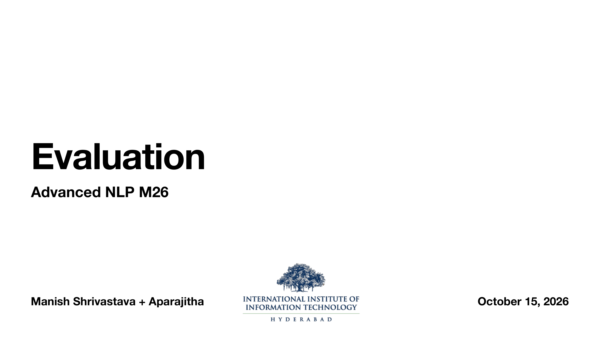
slide 01 · title
On the slide
Lecture 12 of Advanced NLP Monsoon 2026, given on 15 October 2026 by Manish Shrivastava and
Aparajitha. The topic is evaluation: how to put a number on how good a model's outputs are.
Why it gets a lecture
Every claim in NLP research ("our model is better", "this trick helps") is a claim about an
evaluation number. If the number is noisy or measures the wrong thing, the claim is worthless. The
rest of the course builds and speeds up models; this lecture is about checking whether they work.
Slide 02 / 83
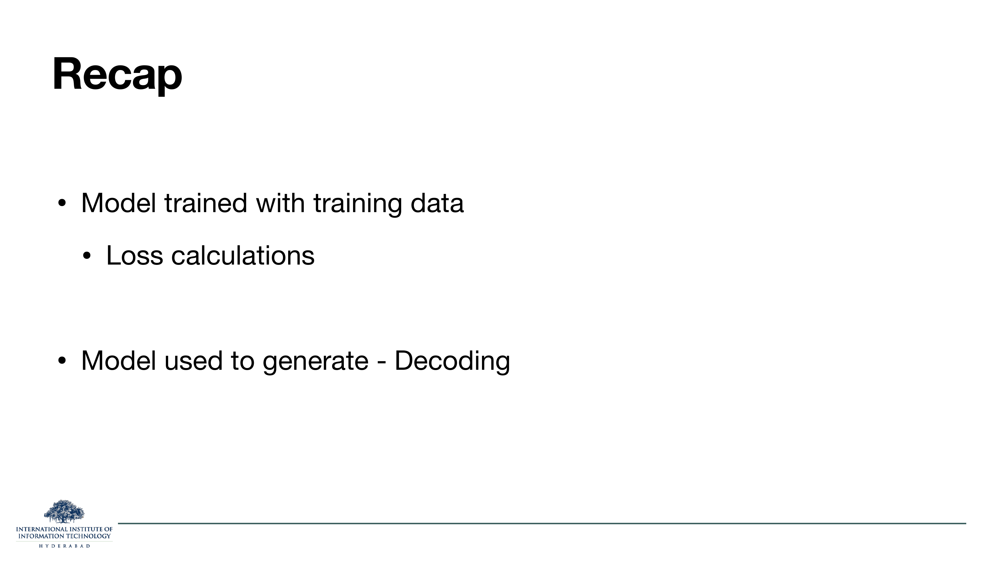
slide 02 · recap: training, then decoding
On the slide
Where we are: the model has been trained by minimising a loss on training data, and the previous
lectures covered how to generate text from it (decoding, speculative decoding).
What is missing
Both steps produce something you can look at: a loss value and some generated text. Neither step
says whether the text is correct, fluent or useful. Evaluation is the third step that closes the
loop.
Slide 03 / 83
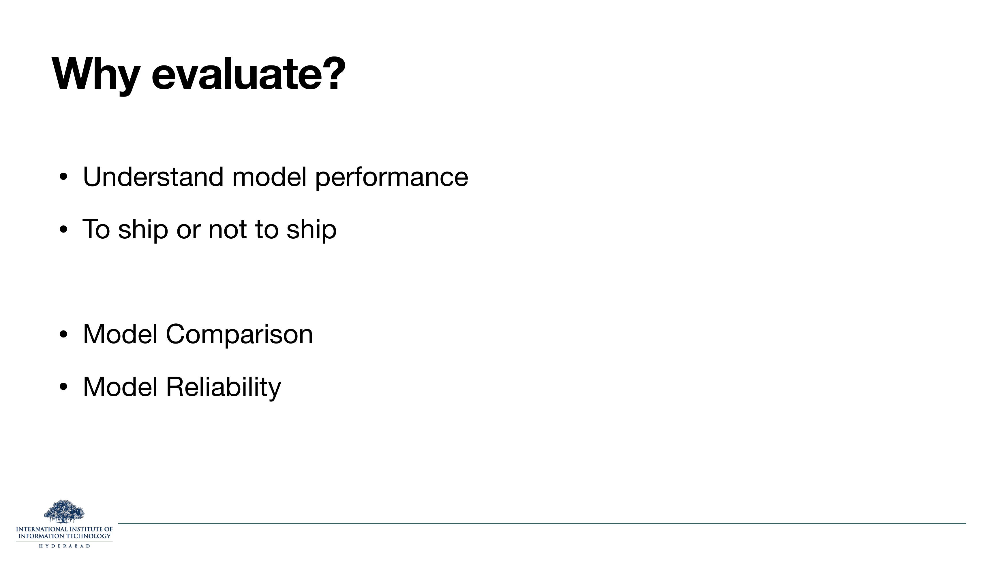
slide 03 · four reasons to evaluate
On the slide
Four reasons: understand how the model performs, decide whether to deploy it, compare it with other
models, and check that it is reliable.
Different reasons need different evaluations
- Understanding needs diagnostic detail: which inputs fail and why.
- Ship or not needs an absolute bar: is it good enough for users?
- Comparison only needs a relative answer: is A better than B? This is easier
and, as §4 shows, can be measured more reliably.
- Reliability needs consistency: does the model behave well on unusual or
adversarial inputs, not just on average?
Keep these four in mind. Each metric later in the lecture is good at some of them and bad at
others.
Slide 04 / 83
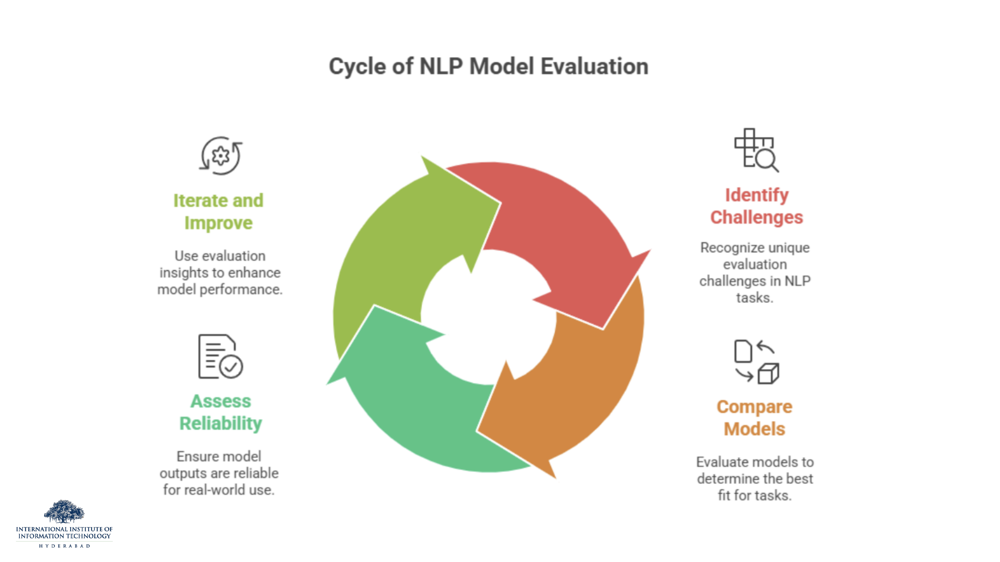
slide 04 · evaluation is a cycle
On the slide
A loop of four stages: identify the challenges of the task, compare models, assess reliability,
then use what you learned to improve the model, and go round again.
Why a cycle matters
Evaluation is not a one-off exam at the end. Each change to the model gets evaluated, and the
results decide the next change. That is exactly why a bad metric is dangerous: if you iterate
against it hundreds of times, you steer the model toward whatever the metric rewards, which may not
be what you want (slides 7–8).
Slide 05 / 83
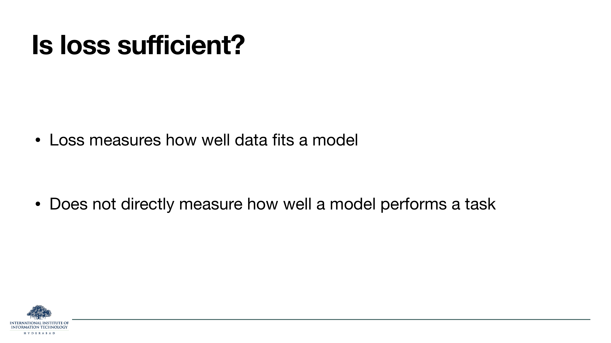
slide 05 · is the loss enough?
On the slide
Loss tells you how well the model fits the data. It does not directly tell you how well the model
does a task.
Why not
A language model's loss is the average cross-entropy of the next token: how surprised the model is
by each actual token. Low loss means the model assigns high probability to real text. But:
- Most tokens in a sentence are easy ("the", punctuation). A model can get a low average loss
while getting the one token that matters (the answer, the number, the name) wrong.
- The task often depends on decoding choices (greedy, sampling, temperature) that the loss never
sees.
- Loss is tied to the tokenizer, so you cannot compare losses across models with different
vocabularies.
The exponentiated form of the loss, perplexity, does appear later as a metric (slide 68), and the
same caveat applies there.
Slide 06 / 83
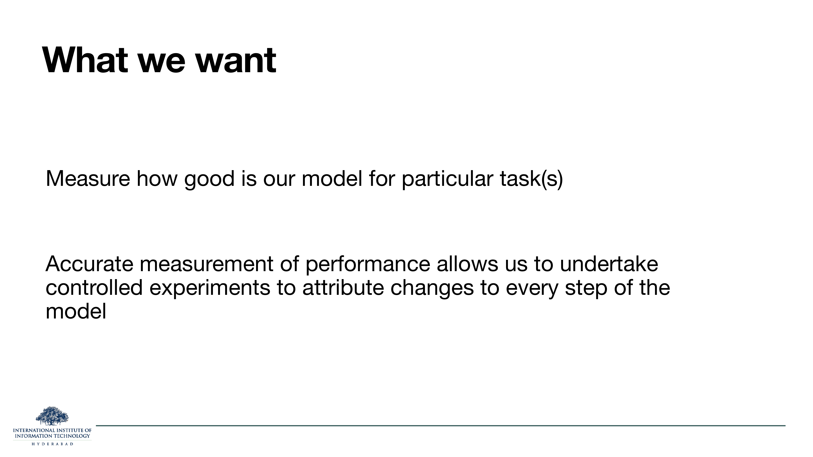
slide 06 · what we want from evaluation
On the slide
The goal: measure task performance accurately enough that we can run controlled experiments and
say which change caused which improvement.
What "controlled experiment" means here
Change one thing (a new dataset, a different positional encoding, more steps), keep everything else
fixed, and compare scores. That only works if the measurement noise is smaller than the effect you
are looking for. A +0.5 point gain means nothing if the score moves by ±1 point when you reshuffle
the test set. §2 is about quantifying that noise.
Slide 07 / 83
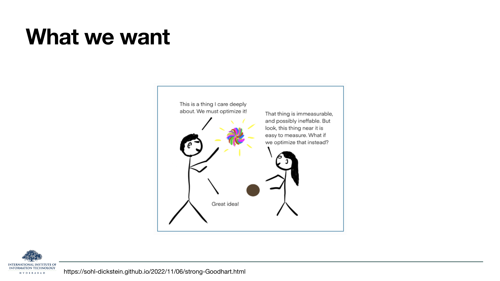
slide 07 · the proxy you can measure
On the slide
A comic from Jascha Sohl-Dickstein's blog post on Goodhart's law. The thing we care about (the
colourful flower) cannot be measured directly. A nearby, easy-to-measure thing (the brown dot) gets
optimised instead.
The NLP version
We care about "good translation" or "helpful answer". Neither can be computed. So we measure a
proxy: n-gram overlap with a reference (BLEU), a learned score (COMET), or a vote by annotators.
Every metric in this lecture is a brown dot. The question is how close it sits to the flower.
Slide 08 / 83
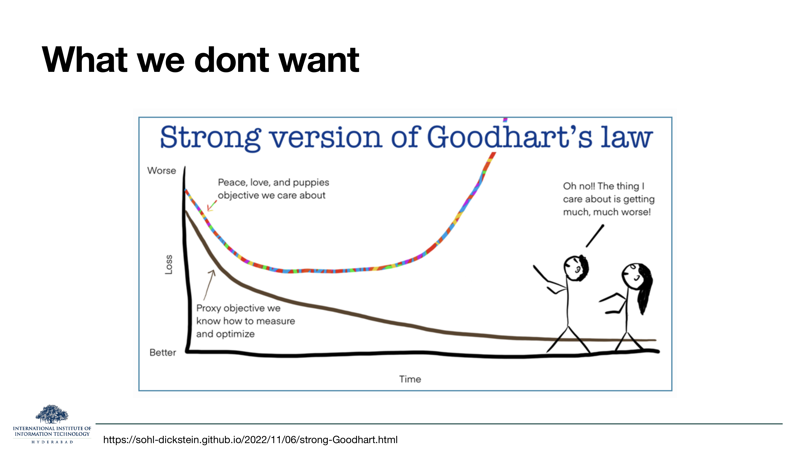
slide 08 · the strong version of Goodhart's law
On the slide
Two curves over training time. The proxy (brown) keeps improving. The real objective (rainbow)
improves at first, flattens, and then gets much worse while the proxy is still going down.
Goodhart's law
The usual statement: "when a measure becomes a target, it ceases to be a good measure". The
strong version in the plot says more: pushing hard on the proxy does not just stop helping
the real goal, it actively harms it. Early on, improving the proxy and improving the goal go
together. Later, the cheapest way to improve the proxy is to exploit where it differs from the
goal.
✦ Key takeaway
Concrete NLP cases: a summarizer tuned for ROUGE learns to copy long stretches of the source
because copying maximises n-gram overlap; a model tuned with RL against a reward model learns to
write long, confident answers that the reward model likes. Slide 57 says lexical metrics are "easy
to game for rewards", and slide 83 ends on the same point.
§2Statistics of a score
A test set is a sample, so a score computed on it is an estimate
with noise. Slides 9–16 set up that view and justify using the
average, then point at the central limit theorem as the tool for
deciding how many test examples you need.
Slide 09 / 83
slide 09 · section: background
On the slide
Section divider. The background part is statistics: how to think of a score as an estimate.
Slide 10 / 83
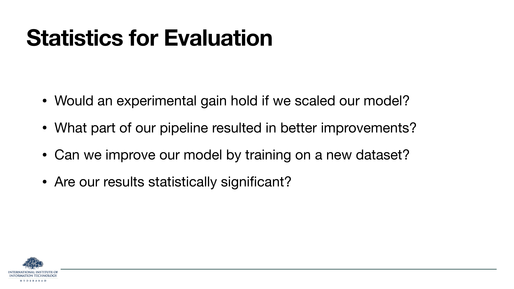
slide 10 · questions statistics should answer
On the slide
Four questions researchers actually ask: does a gain survive scaling, which pipeline step caused
it, does new data help, and is the result statistically significant?
Why statistics
All four are comparisons between two noisy numbers. "Model B scores 71.2, model A scores 70.8" is
only interesting if the gap is larger than what you would see by chance from the choice of test
examples (and, for sampled outputs, the random seed). Statistics gives you the tools to say how
large a gap has to be.
Slide 11 / 83
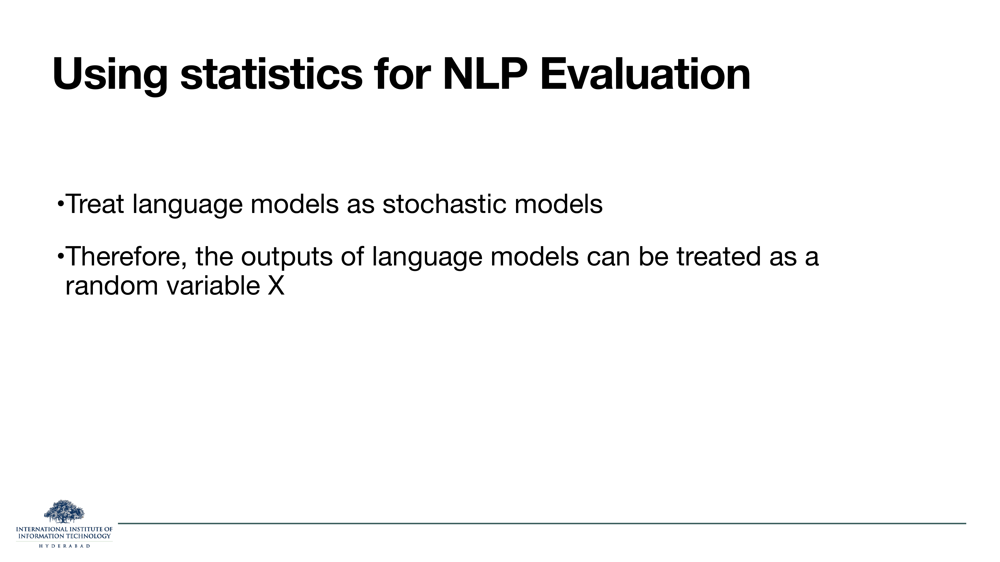
slide 11 · outputs as a random variable
On the slide
A language model is stochastic, so its outputs, and the score of each output, can be treated as a
random variable X.
Two sources of randomness
- Which inputs you test on. The test set is a random draw from all the inputs
you could have used. This is there even with greedy decoding.
- What the model outputs. With sampling (temperature > 0), the same prompt can
give different answers on different runs.
So "the model's score" is really a random variable: for example X = 1 if a randomly drawn
question is answered correctly, 0 otherwise. What we want is its expected value.
Slide 12 / 83
![Population and Samples. While evaluating models, we want to understand its performance on a potentially infinite set of tasks T. However, we only have access to a finite set of samples S, consisting on n datapoints x1, x2 ... xn. We want to estimate the performance on this set S as accurately as possible. Note that this is not the same as maximising the performance on this set (which will be training), rather, we want to ensure that on all tasks that look like S, we are able to quantify what our model can do.](../assets/slides/L12-evaluation/slide-12.png)
slide 12 · population vs sample
On the slide
The population is the (possibly infinite) set of tasks T we care about. We only have a
finite sample S of n datapoints. The aim is to estimate performance on everything
that "looks like" S, not to maximise the score on S itself.
Why the last sentence matters
If you tune your model (or your prompt, or your hyperparameters) until it scores well on S,
then S has become training data, and the score no longer estimates performance on new inputs.
This is why benchmarks keep a hidden test set, and why test-set contamination (benchmark questions
leaking into pre-training data) is such a problem for LLMs: the sample is no longer independent of
the model.
Slide 13 / 83
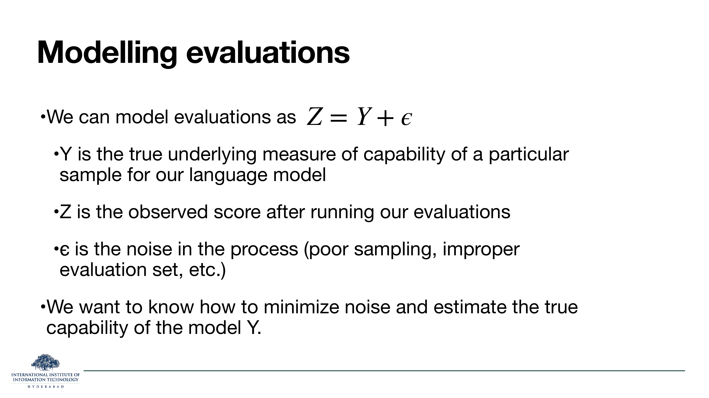
slide 13 · observed score = true capability + noise
On the slide
- Y: the model's true capability.
- Z: the score you actually observe.
- ϵ: noise from poor sampling, a badly built test set, and so on.
Two kinds of noise
It helps to split ϵ into two parts. Random error averages out: a different
random test set would push the score up or down by chance, and more test examples shrink it. That is
what slides 14–16 deal with. Systematic error (bias) does not average out: if the
test set is all easy questions, or the metric rewards copying, every run is off in the same
direction, and no amount of extra data fixes it. Most of the rest of the lecture is about the second
kind: metrics that measure the wrong thing.
Slide 14 / 83
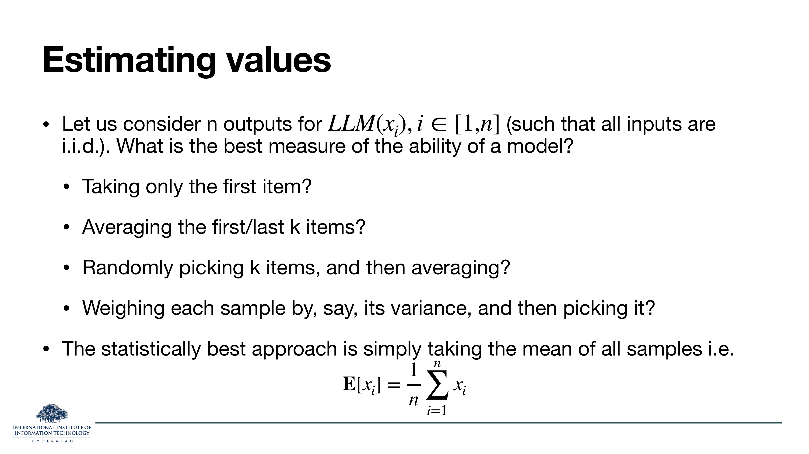
slide 14 · use the mean of all samples
On the slide
Given n i.i.d. scores, how should you summarise them? Not the first one, not the first or
last k, not a random subset. Use the mean of all of them:
Why the full mean
Every option on the list is an unbiased estimate of the true mean if the samples are i.i.d. They
differ in variance. Using one item has variance σ²; using k items has
σ²/k; using all n has σ²/n, the smallest. Throwing away data can only make
the estimate noisier. (Weighting by variance can help when samples have different, known noise
levels, but with i.i.d. samples every weight should be equal.)
⚠ Notation slip on the slide
The slide writes E[xi] = (1/n) Σ xi. That mixes up two different
things. E[xi] is the true expected value, a fixed unknown number. The right-hand
side is the sample mean x̄, a random quantity computed from data. The correct
statement is that x̄ is an estimator of E[x]: E[x̄] = E[x]. Writing an
equals sign between them is what slide 15 then has to prove holds only in the limit.
Slide 15 / 83
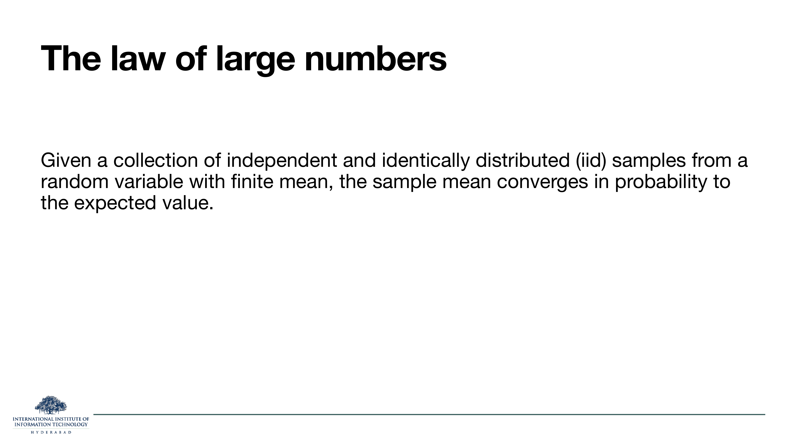
slide 15 · law of large numbers
On the slide
The (weak) law of large numbers: with i.i.d. samples from a distribution with a finite mean, the
sample mean converges in probability to the expected value.
What "converges in probability" means
Pick any tolerance, say 0.01. The probability that x̄ is more than 0.01 away from the true
mean goes to 0 as n grows. So with enough test examples, the average score is almost
certainly close to the true capability. The law says nothing about how many is enough. That
is the job of the next slide.
Slide 16 / 83
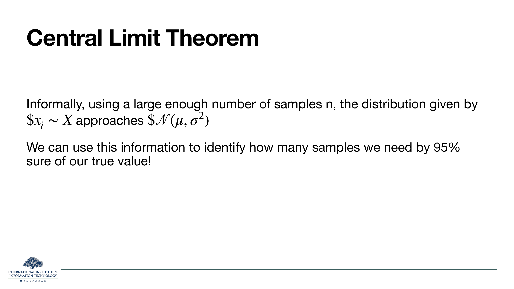
slide 16 · central limit theorem and sample size
On the slide
The central limit theorem (CLT), informally, and the promise that it tells you how many samples you
need to be 95% sure of the true value.
The correct statement
For i.i.d. samples with mean μ and variance σ², the sample mean is
approximately normal for large n:
The spread of x̄ is the standard error σ/√n. About 95% of a normal
distribution lies within 1.96 standard deviations of its mean, so the 95% confidence interval is
x̄ ± 1.96·σ/√n.
Worked example: how big a test set?
Your model gets 70% accuracy. Each example scores 0 or 1, so σ = √(0.7 × 0.3) ≈ 0.458.
- With n = 1,000: standard error = 0.458 / √1000 ≈ 0.0145. The 95% interval is
70% ± 2.8 points.
- To get ±1 point: solve 1.96 × 0.458 / √n = 0.01, giving n ≈ 8,070 examples.
So on a 1,000-question benchmark, a 1-point gap between two models is well inside the noise. Halving
the interval needs four times as many examples, because of the √n.
⚠ Watch out: two errors on the slide
(1) The slide says "the distribution given by xi ∼ X approaches
N(μ, σ²)". Individual samples do not change their distribution as n grows: a 0/1
accuracy score stays 0/1. It is the sample mean that becomes normal, and its variance is
σ²/n, not σ². (2) The stray "$" signs before xi and
N are leftover LaTeX delimiters, not part of the maths.
§3Closed-ended vs open-ended tasks
How hard evaluation is depends on how many right answers there
are. Slides 17–28 split tasks into closed-ended (few correct
answers, easy to score) and open-ended (many correct answers, hard
to score), then walk through QA, summarization and MT.
Slide 17 / 83
slide 17 · section: NLP evaluation
On the slide
Section divider. From general statistics to the specifics of evaluating language tasks.
Slide 18 / 83
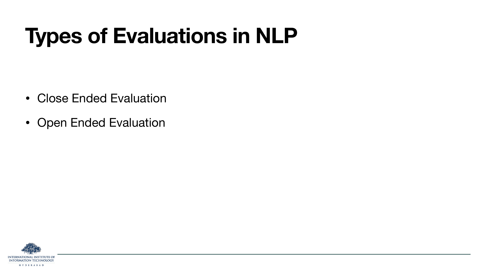
slide 18 · two types of evaluation
On the slide
Two types: close-ended and open-ended evaluation.
The dividing question
Can you write down every correct answer? If yes, scoring is a lookup. If no, you need a way to judge
an answer you have never seen, and that is where all the difficulty comes from.
Slide 19 / 83
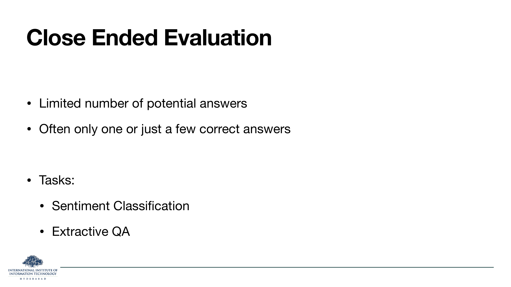
slide 19 · closed-ended tasks
On the slide
Closed-ended tasks have a small set of possible answers and usually only one or a few correct ones.
Examples: sentiment classification and extractive QA.
The examples
- Sentiment classification: the answer is one of a fixed set of labels, such as
positive / negative / neutral.
- Extractive QA: the answer is a span copied from a given passage. "When was the
Eiffel Tower finished?" has the answer "1889" somewhere in the text. The model only chooses a
start and end position.
Slide 20 / 83
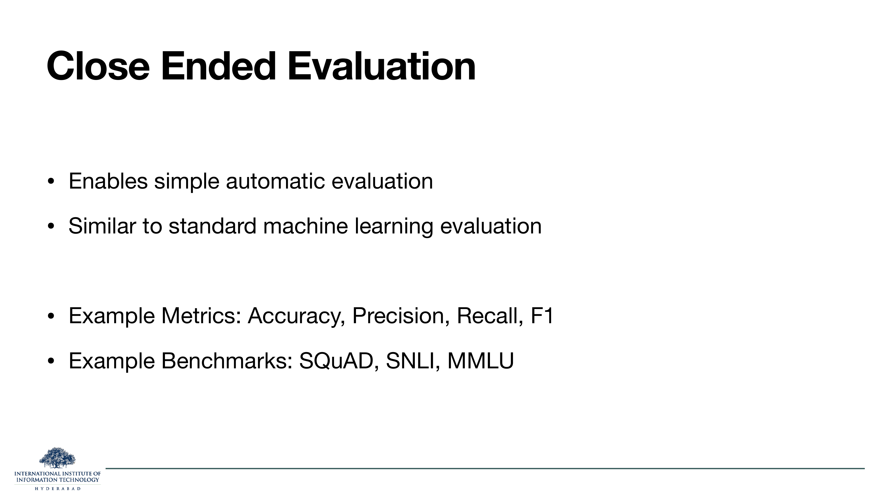
slide 20 · closed-ended metrics and benchmarks
On the slide
Closed-ended tasks allow simple automatic evaluation, like standard ML classification. Metrics:
accuracy, precision, recall, F1. Benchmarks: SQuAD, SNLI, MMLU.
The four metrics
For one class, count true positives (TP), false positives (FP) and false negatives (FN):
Precision: of what you said, how much was right. Recall: of what was right, how much you said. F1 is
their harmonic mean, which is pulled toward the smaller of the two, so you cannot get a high F1 by
maxing out only one.
Worked example: SQuAD-style token F1
SQuAD scores an extracted answer two ways. Exact match (EM) is 1 if the normalised
strings are identical. Token F1 treats the answer as a bag of words. Gold:
"Eiffel Tower". Prediction: "the Eiffel Tower in Paris". After normalisation (lowercase, drop
articles and punctuation) the prediction is {eiffel, tower, in, paris} and the gold is
{eiffel, tower}. Overlap = 2. P = 2/4 = 0.5, R = 2/2 = 1,
F1 = 2·0.5·1 / 1.5 ≈ 0.67. EM = 0. F1 gives partial credit; EM gives none.
The benchmarks
- SQuAD: extractive QA over Wikipedia paragraphs (EM and F1).
- SNLI: natural language inference. Given two sentences, label the pair as
entailment, contradiction or neutral (accuracy).
- MMLU: multiple-choice questions across 57 subjects (accuracy over A/B/C/D).
Slide 21 / 83
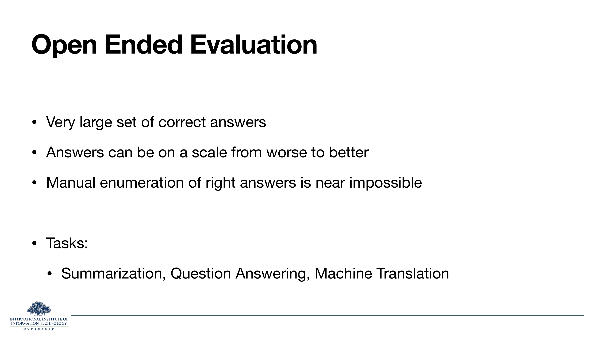
slide 21 · open-ended tasks
On the slide
Open-ended tasks have very many correct answers, graded from worse to better rather than right or
wrong, and you cannot list them all. Examples: summarization, question answering, machine
translation.
An example of "many right answers"
Translate the French "Il pleut des cordes". "It's raining heavily", "It's pouring", "It's raining
cats and dogs", "The rain is coming down hard" are all good. A word-by-word "It rains ropes" is
understandable but bad. No reference can hold every good version, which is why reference-based
metrics (§5–§6) struggle.
⚠ QA appears on both sides
Slide 19 lists extractive QA as closed-ended; this slide lists question answering as open-ended;
slide 22 puts QA and MT under "defined output candidates" rather than "open-ended". These fit
together if you read them as different kinds of QA: extractive QA (copy a span) is closed;
free-form generative QA (write an answer) is open. MT sits in between: many valid outputs, but all
constrained by the source sentence.
Slide 22 / 83
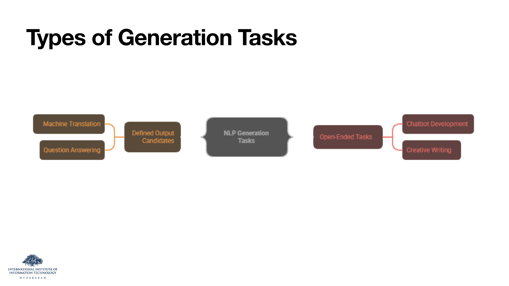
slide 22 · constrained vs open generation
On the slide
Generation tasks split into those with defined output candidates (MT, QA) and truly
open-ended tasks (chatbots, creative writing).
A spectrum, not two boxes
Order the tasks by how much the input pins down the output: classification, then extractive QA,
then MT (meaning fixed, wording free), then summarization (which facts to keep is also free), then
dialogue, then story writing (almost nothing fixed). Slide 58 uses exactly this ordering to say that
lexical metrics get worse the further right you go.
Slide 23 / 83
![Example: How do you evaluate QA? Question Answering (QA) is an NLP task where a model generates or extracts an answer to a question, often using provided context or its learned knowledge. Three thought bubbles around a thinking face: Factuality Check, ensures the model's answers are accurate and not hallucinatory by cross-referencing with reliable sources. Efficiency Metrics, evaluates the model's inference speed and computational cost for real-world deployment. Robustness Testing, assesses the model's ability to handle challenging or adversarial inputs.](../assets/slides/L12-evaluation/slide-23.png)
slide 23 · QA: what to check
On the slide
Three things to check for a QA system: factuality (is the answer true, not hallucinated),
efficiency (speed and compute cost) and robustness (does it survive tricky or adversarial
questions).
Beyond accuracy
A QA model that is correct but takes 30 seconds per answer may not be shippable (slide 3's
"ship or not"). One that is correct on clean questions but fails when you add an irrelevant
sentence to the passage is not reliable. Evaluation has more than one axis.
Slide 24 / 83
![Example: How do you evaluate QA? A double-headed arrow from Strict on the left to Lenient on the right, with seven coloured segments: Exact Match (requires perfect, verbatim answer match), BLEU (measures similarity based on n-gram overlap), ROUGE (focuses on capturing reference answer content), F1-score (harmonic mean of precision and recall), Context Precision/Recall (identifies correct supporting evidence), Fuzzy Matching (accounts for synonyms and paraphrases), Human Evaluation (assesses quality, relevance, and fluency).](../assets/slides/L12-evaluation/slide-24.png)
slide 24 · QA metrics from strict to lenient
On the slide
QA metrics laid out on a scale from strict to lenient: exact match, BLEU, ROUGE, F1, context
precision/recall, fuzzy matching, human evaluation.
Reading the scale
Strict metrics give no credit for "1889." when the gold is "1889"; lenient ones accept
"in the year 1889" or "late 19th century" if a judge thinks it answers the question. Strictness is
a trade-off: strict metrics are cheap and reproducible but wrongly mark good answers as wrong;
lenient ones are fairer but cost more and vary between judges. "Context precision/recall" is used
for retrieval-augmented QA: did the system retrieve the passages that actually support the
answer?
Slide 25 / 83
![Example: How do you evaluate Summarization? Summarization is an NLP task where a model condenses a longer piece of text into a shorter version while preserving its key information and main ideas. Three bubbles: Human Evaluation, provides a gold standard by assessing factuality, fluency, coherence, informativeness, and relevance. User-Centric Evaluation, involves real users to measure time on task and question answering ability. Task-Specific Metrics, tailors evaluation to the specific summarization task, ensuring key elements are present.](../assets/slides/L12-evaluation/slide-25.png)
slide 25 · summarization: three approaches
On the slide
Three ways to evaluate a summary: human judges rating factuality, fluency, coherence,
informativeness and relevance; user studies (can a reader answer questions about the document
using only the summary, and how fast?); and task-specific checks that the key elements are
present.
The user-centric idea
A summary is good if it lets someone do something. So measure that directly: give readers the
summary, ask them questions about the original document, and count how many they get right. This
is close to the "flower" of slide 7, but it is very expensive.
Slide 26 / 83
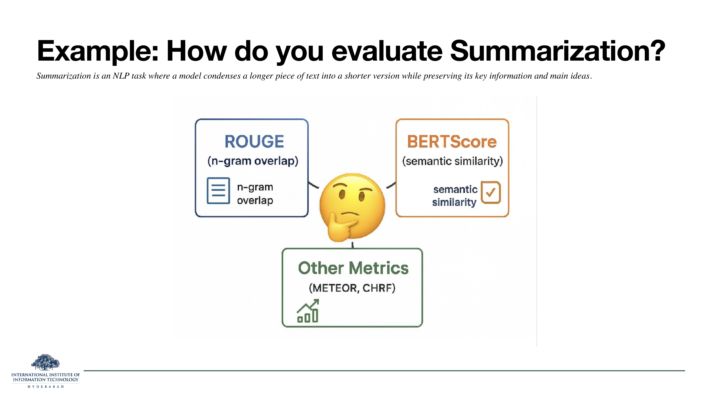
slide 26 · summarization: automatic metrics
On the slide
The automatic metrics used for summarization: ROUGE (n-gram overlap), BERTScore (semantic
similarity) and others such as METEOR and chrF. Each gets its own slides in §5 and §6.
Slide 27 / 83
![Example: How do you evaluate MT? Machine Translation (MT) is an NLP task where a model translates text from one language into another while preserving its meaning and producing fluent, natural output. Three panels. 1: Must capture similarity in all dimensions: lexical, morphological, syntactic, semantic and context; a concentric-rings diagram of linguistic levels from phonetics in the centre through phonology, morphology, syntax, semantics to pragmatics on the outside, captioned Major levels of linguistic structure. 2: Must exhibit high correlation with human judgements; a scatter plot of human judgements against metric score lying on a straight line; For Eg: if a sentence is awarded a higher score by humans, then the metric should correspondingly produce high score. 3: Fast and easy to use; an hourglass image; an ideal metric must be agile, easy to run and understand with minimum or no training effort, minimal resource requirement. Courtesy: Ananya Mukherjee.](../assets/slides/L12-evaluation/slide-27.png)
slide 27 · what an ideal MT metric needs
On the slide
Three requirements for an ideal MT metric: it captures similarity at every linguistic level
(lexical, morphological, syntactic, semantic, contextual); it correlates highly with human
judgements; and it is fast and easy to run.
How metrics are judged: correlation with humans
The middle panel is how the field decides whether a metric is any good. Collect human scores for
many translations, compute the metric on the same translations, and measure the correlation (Pearson
for linear agreement, Kendall's τ or Spearman for agreement on ranking). The annual WMT metrics shared
task does exactly this. A metric with correlation 0.9 orders translations almost the way humans do;
one with 0.3 barely does.
The tension
Requirements 1 and 2 push toward big learned models that understand meaning. Requirement 3 pushes
toward simple counting. The lecture's metrics move along this trade-off: BLEU is fast and shallow,
COMET is slow and deep.
Slide 28 / 83
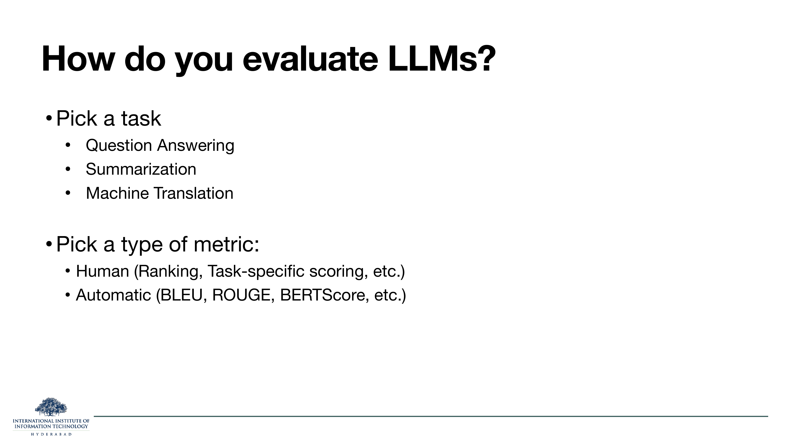
slide 28 · pick a task, then a metric
On the slide
The recipe: pick a task, then pick a type of metric, either human (ranking, task-specific scoring)
or automatic (BLEU, ROUGE, BERTScore).
Why the order matters
A general-purpose LLM has no single task, so there is no single score. You evaluate it task by task,
and the metric must suit the task: BLEU for a chatbot, for instance, makes little sense. Benchmark
suites (slide 83) bundle many task/metric pairs together.
§4Human evaluation
Humans are the reference point every automatic metric is measured
against. Slides 29–39 map out the whole family of metrics and then
cover three ways of asking people: score one output, compare
several, or mark every error.
Slide 29 / 83
slide 29 · section: metrics
On the slide
Section divider. The rest of the deck is about specific metrics.
Slide 30 / 83
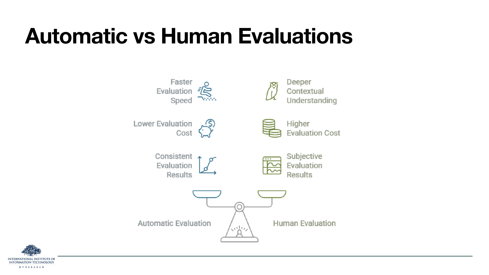
slide 30 · automatic vs human
On the slide
Automatic evaluation is faster, cheaper and consistent. Human evaluation has deeper contextual
understanding but is more expensive and subjective.
Consistent is not the same as correct
"Consistent" means an automatic metric gives the same number every time you run it on the same
output. That is useful for comparing runs. It does not mean the number is right: BLEU will
consistently give a correct paraphrase a low score. Humans are noisier but closer to what we actually
care about. In practice you use automatic metrics for day-to-day iteration and humans for final or
high-stakes decisions.
Slide 31 / 83
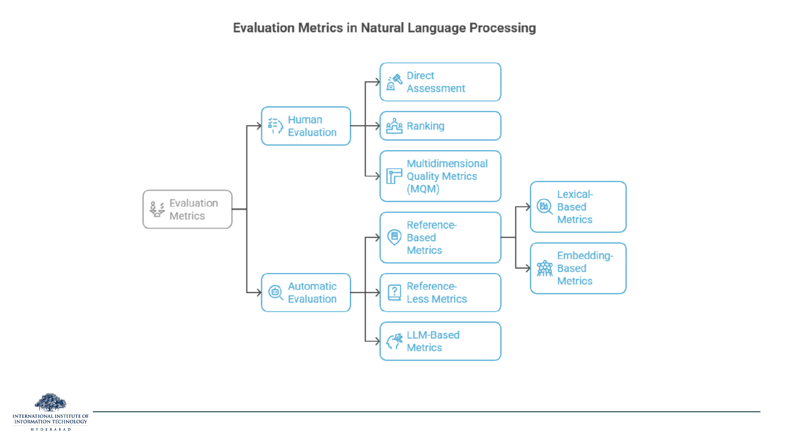
slide 31 · the map of metrics
On the slide
The taxonomy that organises the rest of the lecture:
- Human: direct assessment, ranking, MQM (this section).
- Automatic, reference-based: lexical (§5) and embedding-based (§6).
- Automatic, reference-less (§7).
- Automatic, LLM-based.
⚠ One branch is not covered
The tree includes "LLM-Based Metrics" (using a strong LLM as a judge), but no slide in the deck
covers them. They only reappear as leaves of the decision tree on slide 80 (GEMBA-MQM, GEMBA-DA,
Auto-MQM). The idea: prompt an LLM with the source and output and ask it for a score or a list of
errors. This is now very common for evaluating chat models, with its own biases (preferring longer
answers, preferring its own outputs).
Slide 32 / 83
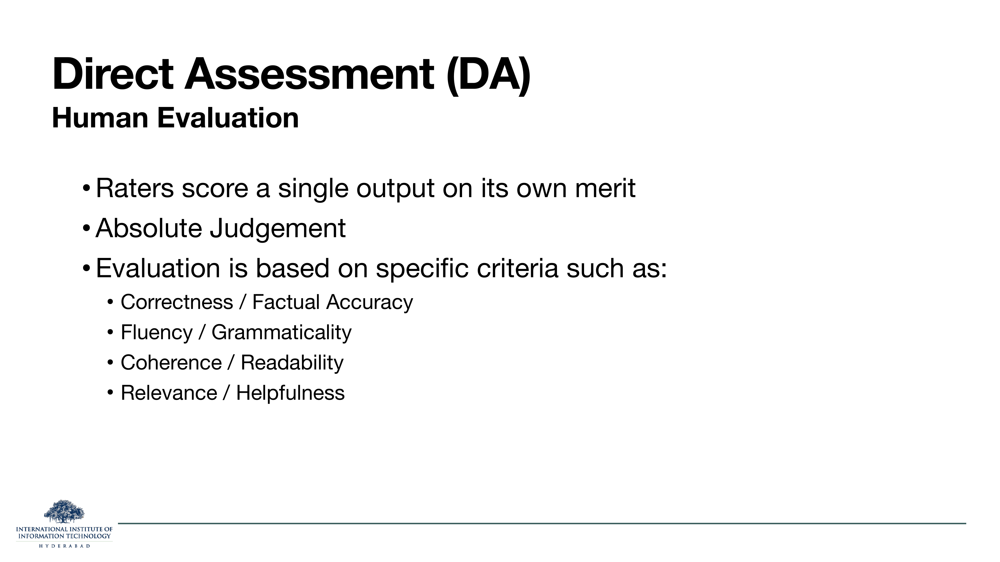
slide 32 · direct assessment
On the slide
Direct assessment: a rater looks at one output alone and gives it an absolute score on criteria such
as correctness, fluency, coherence and relevance.
How it looks in practice
Typically a Likert scale (1–5) or a slider (0–100) per criterion. For example: "Rate the fluency of
this translation from 1 (incomprehensible) to 5 (native-like)". WMT has used 0–100 slider DA scores
for years. Because raters use the scale differently (one rater's 70 is another's 85), scores are
often standardised per rater (converted to z-scores) before averaging.
Slide 33 / 83
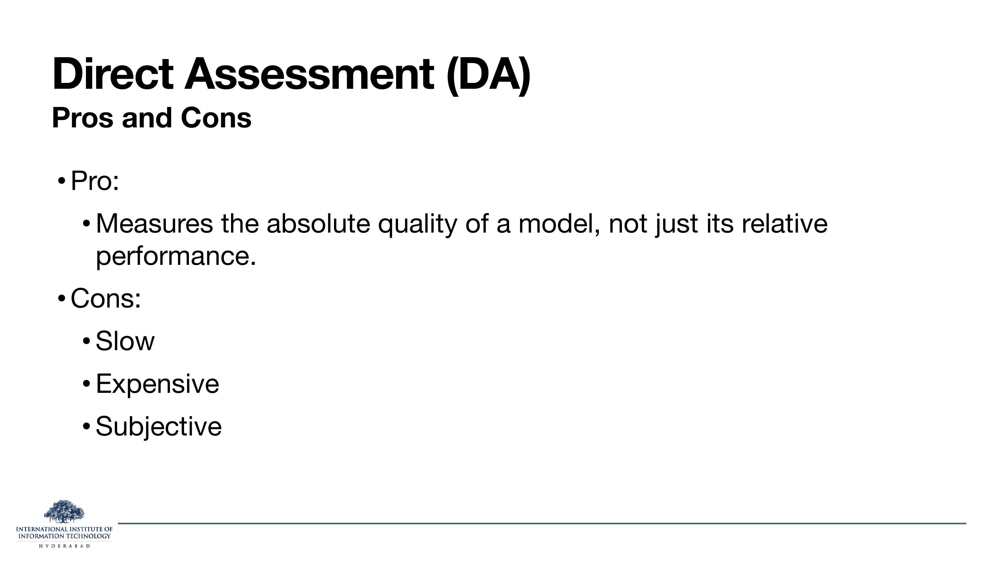
slide 33 · DA pros and cons
On the slide
Pro: gives an absolute measure of quality. Cons: slow, expensive, subjective.
Why absolute matters
DA is the only one of the three human methods that answers slide 3's "ship or not" question. If
your two candidate models both average 2/5, DA tells you neither is ready. A ranking would just tell
you which one is less bad.
Slide 34 / 83
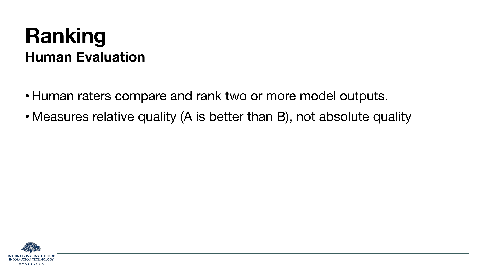
slide 34 · ranking
On the slide
Ranking: raters see two or more outputs for the same input and order them. It measures relative
quality only.
The pairwise version
The most common form is pairwise: show outputs A and B side by side, ask "which is better?" (often
with a "tie" option). Many such votes can be turned into a ranking of models. Chatbot Arena does this
at scale with an Elo-style rating, and RLHF preference data is collected the same way.
Slide 35 / 83
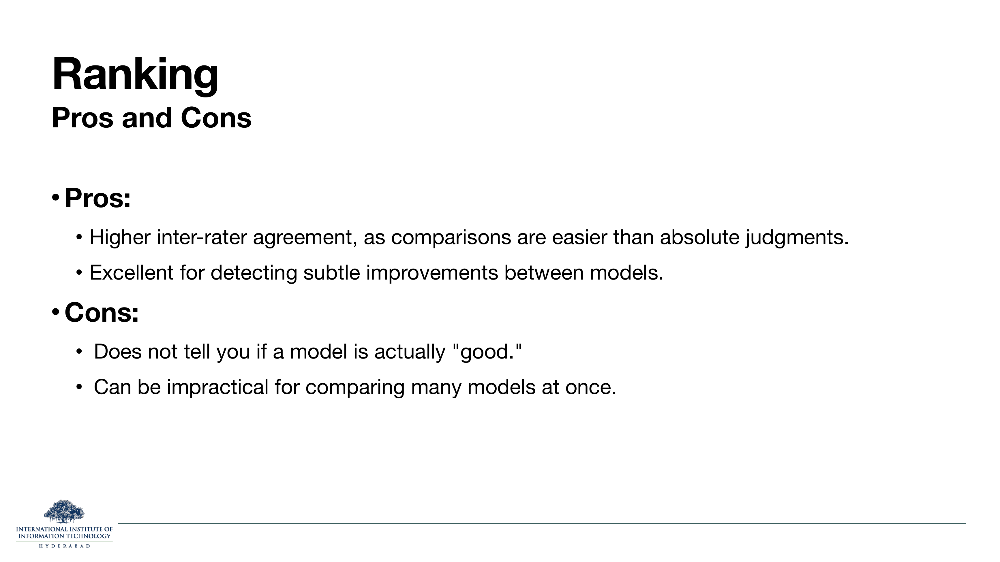
slide 35 · ranking pros and cons
On the slide
Pros: raters agree more often, and small differences are easier to detect. Cons: no absolute
quality, and comparing many models is impractical.
Why comparisons are easier
Ask ten people "is this translation a 3 or a 4?" and you get a spread. Ask "is A or B better?" and
most agree, because they only have to notice a difference, not calibrate a scale. That is why ranking
is good at spotting subtle improvements.
Why many models are a problem
With m models there are m(m − 1)/2 pairs. Five models: 10 pairs. Twenty models:
190 pairs, each needing many votes. Methods like Elo or Bradley–Terry help by inferring a full ranking
from a subset of pairs.
Slide 36 / 83
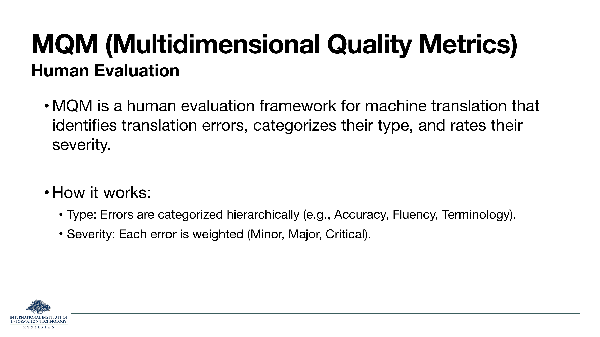
slide 36 · MQM: mark every error
On the slide
MQM is an error-annotation framework for MT. Trained annotators mark each error span, give it a
type from a hierarchy (accuracy, fluency, terminology, ...) and a severity (minor, major,
critical).
From errors to a score
Each severity has a weight, and the score is the weighted sum of errors (lower is better), often
normalised by length. The weights vary between setups; one common scheme is minor = 1, major = 5,
with critical errors weighted higher still. Example: a 20-word translation with one mistranslation
(major) and two punctuation slips (minor) gets a penalty of 5 + 1 + 1 = 7. Another with a single
minor spelling error gets 1. The first is clearly worse, and you know why.
Slide 37 / 83
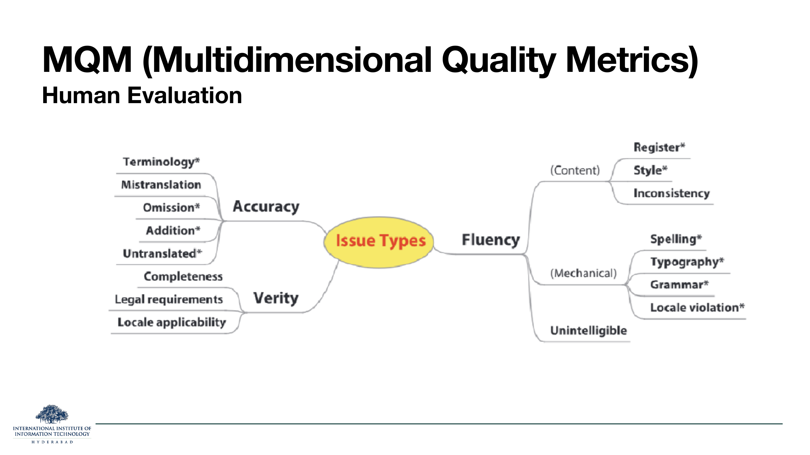
slide 37 · the MQM error hierarchy
On the slide
The MQM issue hierarchy. Three top branches:
- Accuracy: does the target say what the source says? Terminology,
mistranslation, omission (something dropped), addition (something invented), untranslated
text.
- Fluency: is the target good text on its own? Content issues (register, style,
inconsistency), mechanical issues (spelling, typography, grammar, locale conventions such as date
formats), and unintelligible text.
- Verity: is it right for the target audience and setting? Completeness, legal
requirements, locale applicability.
The asterisks mark a subset of categories; the slide does not explain them, and they most likely
mark the core categories used in a common reduced version of the framework.
Accuracy vs fluency
This split recurs throughout MT evaluation. A fluent translation can be inaccurate ("The cat sat on
the mat" for a source about a dog) and an accurate one can be disfluent ("Weapons of Iraq given to
army in two weeks"). Modern neural MT is very fluent, so accuracy errors are now the main
concern, and they are exactly the ones surface metrics have trouble seeing.
Slide 38 / 83
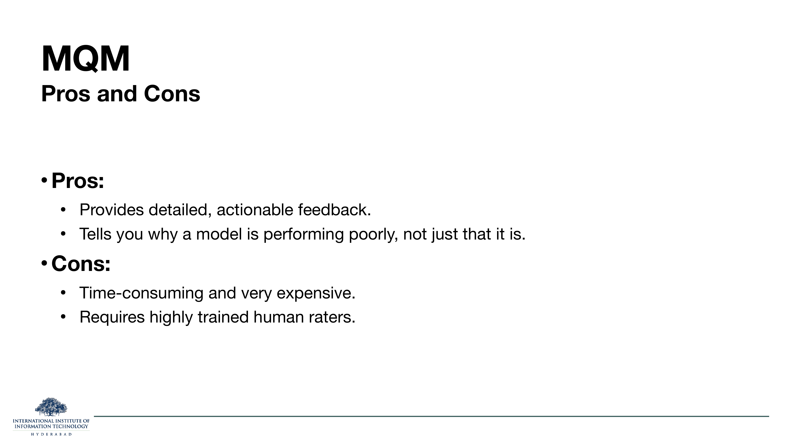
slide 38 · MQM pros and cons
On the slide
Pros: detailed, actionable feedback that explains why a model is poor. Cons: slow, very
expensive, needs highly trained raters (typically professional translators).
Where it fits
MQM is the most informative of the three human methods and the most expensive. It is now the
preferred gold standard at WMT, and several learned metrics (xCOMET on slide 76, the GEMBA-MQM
prompts on slide 80) are trained or prompted to imitate it automatically.
Slide 39 / 83
slide 39 · the problems with human evaluation
On the slide
The general problems: time, cost, subjectivity, the need for trained raters, and the need for
language and domain knowledge.
The last point
To judge an English-to-Telugu medical translation you need someone fluent in both languages who also
understands medical terms. Such people are rare and expensive, and for low-resource languages they
may be nearly impossible to find. This is the main reason automatic metrics exist at all.
→ Measuring subjectivity
Subjectivity is usually quantified as inter-annotator agreement, for example Cohen's
κ, which compares observed agreement with the agreement you would expect by chance. κ = 1 is
perfect agreement and κ = 0 is chance level. If your annotators barely agree with each other, no
metric can be expected to agree with them either.
§5Lexical metrics
Lexical metrics compare the surface form of the output with a
human reference: which words or characters match. They split into
error rates (how many edits to fix the output) and n-gram overlap
(how many short word sequences are shared). They are fast,
cheap and blind to meaning.
Slide 40 / 83
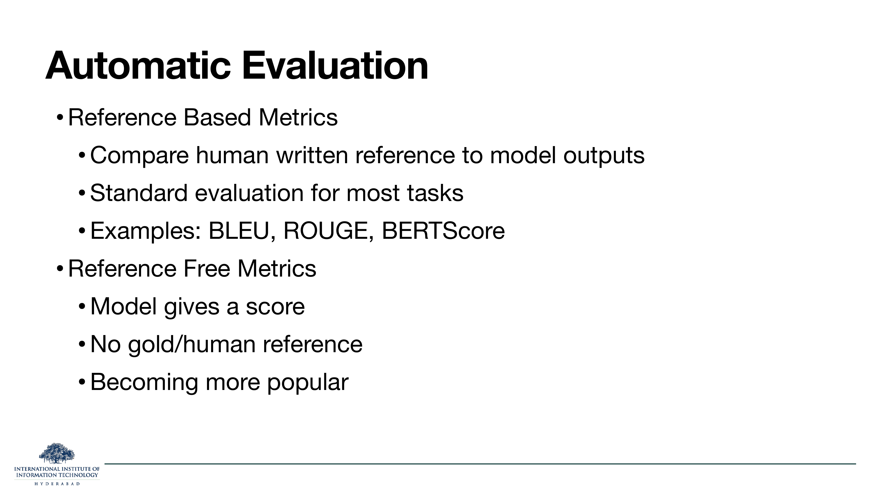
slide 40 · reference-based vs reference-free
On the slide
Automatic metrics come in two kinds. Reference-based metrics compare the output with a
human-written reference (BLEU, ROUGE, BERTScore) and are the standard. Reference-free metrics have a
model score the output with no reference, and are becoming more popular.
The cost of a reference
A reference has to be written by a human for every test input, once. After that, any number of
systems can be scored for free. The weakness is that one reference is one of many valid answers
(slide 21), so a good output that differs from it gets penalised. Reference-free metrics avoid this
but need a model that can judge quality on its own (§7).
Slide 41 / 83
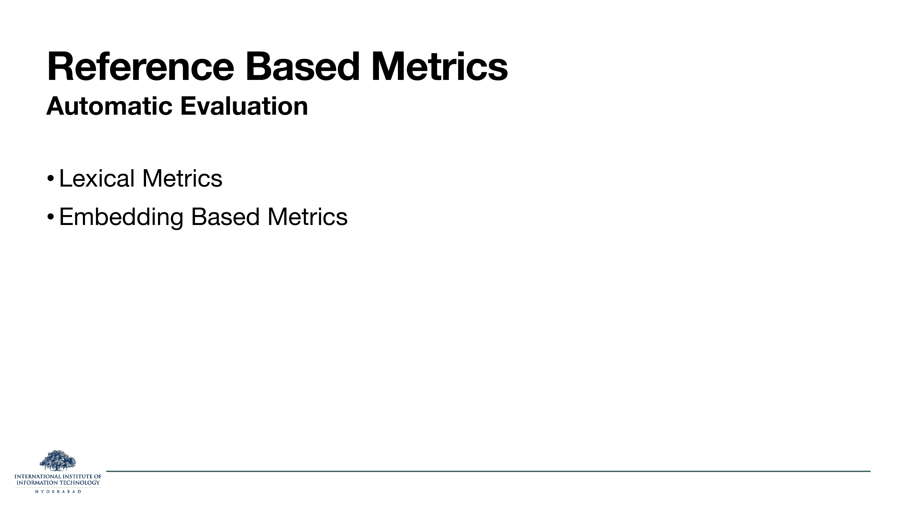
slide 41 · lexical and embedding-based
On the slide
Reference-based metrics split into lexical (match words or characters) and embedding-based (match
vector representations, §6).
The difference in one example
Reference "The car is very fast", output "The automobile is extremely rapid". Lexically only "The"
and "is" match. In embedding space "car" is close to "automobile" and "very fast" close to
"extremely rapid", so an embedding metric sees a near match.
Slide 42 / 83
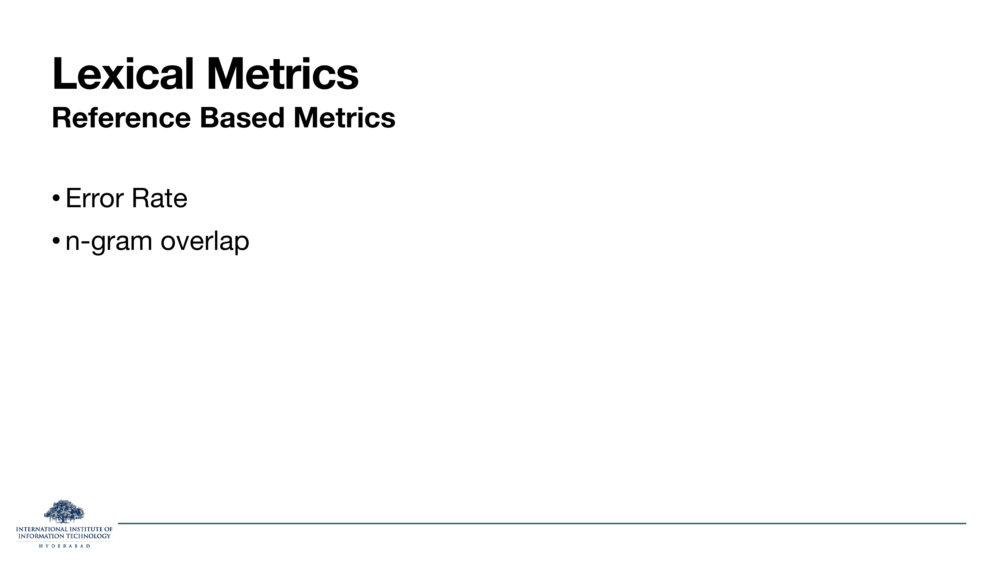
slide 42 · error rates and n-gram overlap
On the slide
Two families of lexical metrics: error rates (WER, TER) and n-gram overlap (BLEU, ROUGE, chrF,
METEOR).
The difference
Error rates align the two sentences word by word in order and count edits; lower is better. N-gram
metrics ignore global order and count shared short sequences; higher is better.
Slide 43 / 83
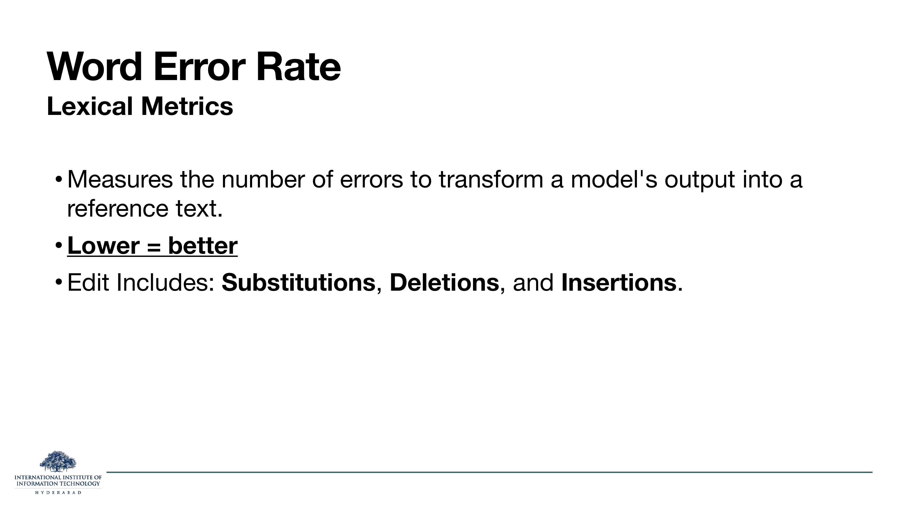
slide 43 · word error rate
On the slide
WER counts the word edits (substitutions, deletions, insertions) needed to turn the output into the
reference. Lower is better.
The formula
S, D, I are the counts of substitutions, deletions and insertions in the
cheapest alignment (the word-level Levenshtein edit distance), and N is the number of words
in the reference.
Worked example
Reference: "the cat sat on the mat" (N = 6). Output: "the cat sit on mat".
- "sat" → "sit": 1 substitution.
- the second "the" is missing: 1 deletion.
WER = (1 + 0 + 1) / 6 ≈ 33%. WER is the standard metric for speech recognition, where there is
essentially one correct transcript, so the "one reference" problem is small.
⚠ Watch out
WER can exceed 100%, because insertions are not capped. An output that babbles 20 extra words
against a 6-word reference has WER above 3. Also note that the denominator is the reference length,
so WER is not symmetric.
Slide 44 / 83
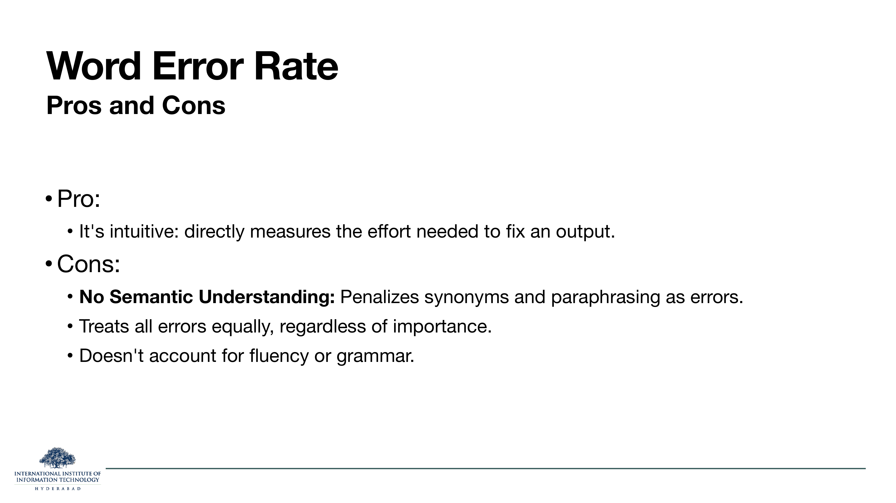
slide 44 · WER pros and cons
On the slide
Pro: intuitive, it measures the effort to fix the output. Cons: no semantics, all errors weigh the
same, no notion of fluency or grammar.
"All errors weigh the same"
"I did not sign the contract" vs "I did sign the contract" is one deletion: WER = 1/6, the
same as dropping "the". One reverses the meaning; the other is harmless. MQM (slide 36) exists
because of exactly this.
Slide 45 / 83
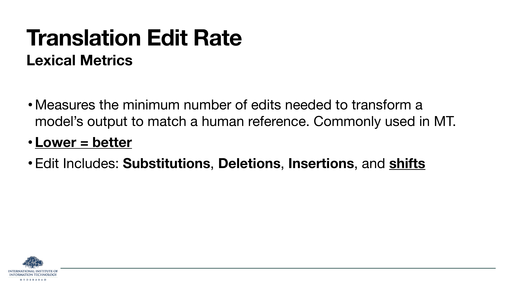
slide 45 · translation edit rate
On the slide
TER is WER plus one more edit type: shifts, moving a contiguous block of words to another
position at the cost of one edit. Lower is better. Used in MT.
Worked example: what shifts buy you
Reference: "the cat sat on the mat". Output: "on the mat the cat sat". Same words, two halves
swapped.
- WER: the cheapest alignment without moves needs 6 edits, so WER = 6/6 = 100%.
The output is scored as badly as an empty string would be.
- TER: shift the block "on the mat" to the end in one move. TER = 1/6 ≈ 17%.
Languages reorder whole phrases (English "in two weeks" can go at the start or end of a sentence),
so shifts matter for translation in a way they do not for speech transcripts.
Slide 46 / 83
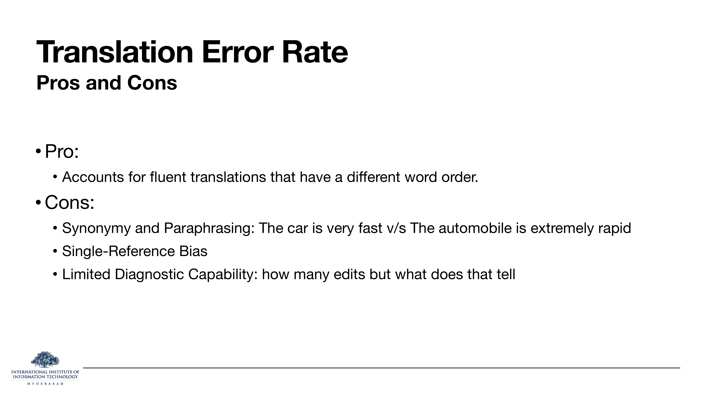
slide 46 · TER pros and cons
On the slide
Pro: handles valid reordering. Cons: synonyms and paraphrases are still errors, it depends on a
single reference, and an edit count does not tell you what is wrong.
The example
"The car is very fast" vs "The automobile is extremely rapid": three substitutions out of five words,
TER = 60%, for a perfect paraphrase.
⚠ Name mismatch
Slide 45 calls TER "Translation Edit Rate"; this slide calls it "Translation
Error Rate". Both names are used in the literature for the same metric. The original
paper (Snover et al., 2006) uses "Translation Edit Rate".
→ Where TER is still used
Its "pro" from slide 44 still holds: TER approximates post-editing effort. A variant called HTER
computes TER against a human post-edit of the system's own output, which removes much of the
single-reference bias. Slide 80 sends you to TER when "post-editing effort" is what you care
about.
Slide 47 / 83
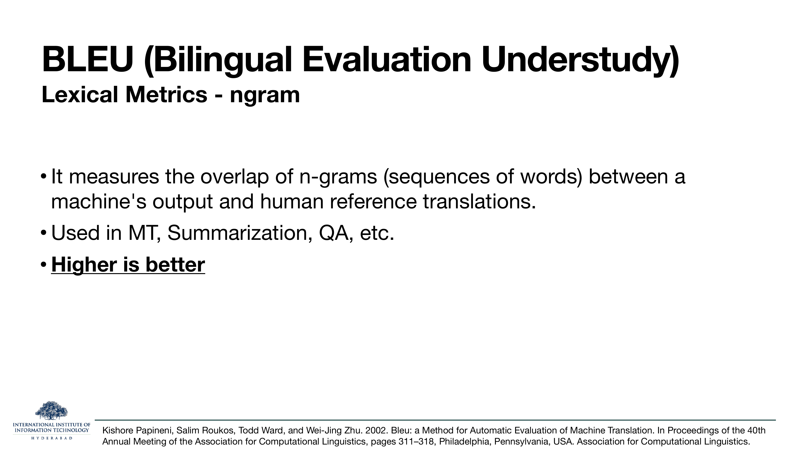
slide 47 · BLEU
On the slide
BLEU measures n-gram overlap between the output and one or more reference translations. Higher is
better. From Papineni et al. (ACL 2002).
The full formula
The slide does not give it, so here it is. For n = 1 to 4, compute a clipped n-gram
precision pn: the fraction of the output's n-grams that also appear in the
reference, where each n-gram is counted at most as many times as it appears in the reference. Then
combine:
- The exp of the average log is the geometric mean of p1 to
p4.
- c is the output length, r the reference length. The brevity penalty BP
punishes outputs shorter than the reference. Without it, a one-word output that happens to be
correct would have perfect precision.
- Clipping: the output "the the the the" against reference "the cat is on the mat"
would have unigram precision 4/4 without clipping. "the" appears twice in the reference, so the
clipped precision is 2/4.
Worked example with a non-zero score
Reference: "the cat is on the mat". Output: "the cat is on a mat" (one word changed).
- p1: the, cat, is, on, mat match; "a" does not. 5/6.
- p2: "the cat", "cat is", "is on" match; "on a", "a mat" do not. 3/5.
- p3: "the cat is", "cat is on" match. 2/4.
- p4: "the cat is on" matches. 1/3.
- Geometric mean = (5/6 × 3/5 × 2/4 × 1/3)1/4 = (1/12)1/4 ≈ 0.537. Same
length, so BP = 1.
BLEU ≈ 0.54, often reported as 53.7. One wrong word costs almost half the score, because it breaks
every n-gram that passes through it.
Slide 48 / 83
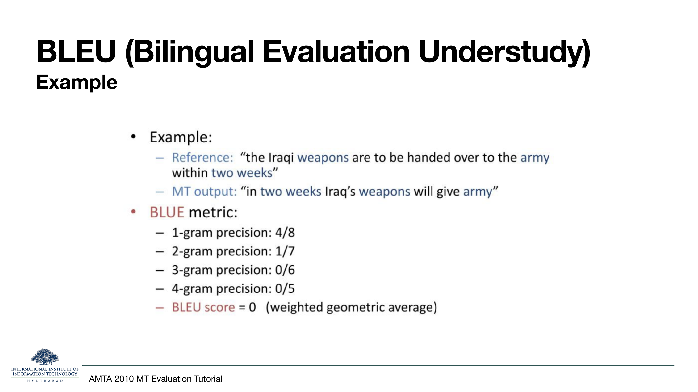
slide 48 · a BLEU example that scores zero
On the slide
Reference: "the Iraqi weapons are to be handed over to the army within two weeks" (14 words).
Output: "in two weeks Iraq's weapons will give army" (8 words). Precisions 4/8, 1/7, 0/6, 0/5, so
BLEU = 0.
Checking the counts
- Unigrams: "two", "weeks", "weapons", "army" match. "in" does not (the reference
has "within"), and "Iraq's" does not match "Iraqi". 4/8.
- Bigrams: only "two weeks" matches. 1/7.
- Trigrams and 4-grams: none. 0/6 and 0/5.
One zero in the geometric mean makes the whole product zero. The slide leaves out the brevity
penalty: c = 8 < r = 14, so BP = e1 − 14/8 ≈ 0.47. It would not
matter here, since 0 × 0.47 is still 0.
What the example shows
The output is bad English but a human can see it is roughly about the right thing. BLEU gives it
exactly the same score as random words. At the sentence level, BLEU is very coarse. Libraries such
as sacreBLEU offer smoothing (adding a small count to zero precisions) so that sentence-level
scores are not stuck at zero, but the standard use of BLEU is at the corpus level: sum the n-gram
matches and totals over the whole test set first, then compute one score.
⚠ Typo on the slide
The slide says "BLUE metric". It means BLEU.
Slide 49 / 83
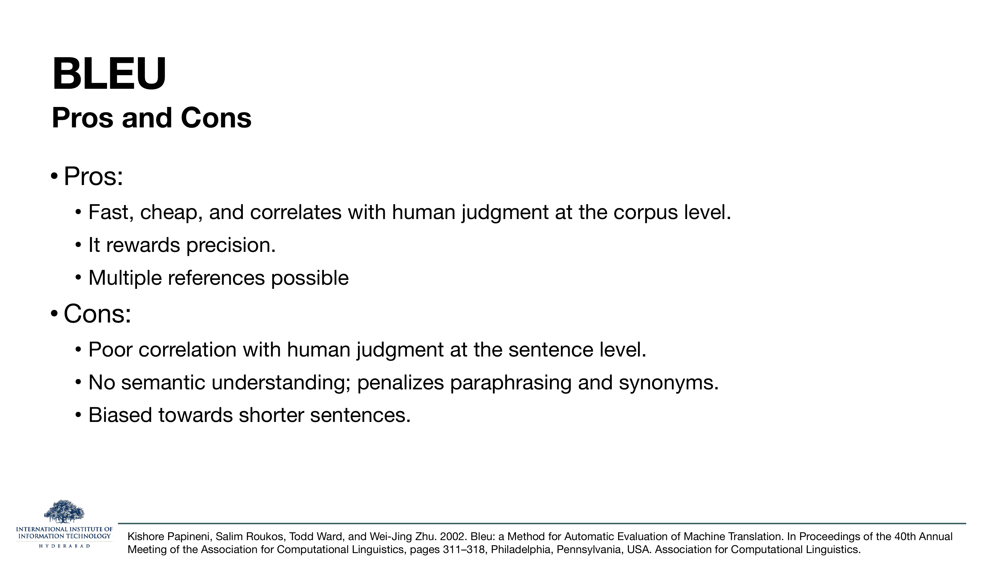
slide 49 · BLEU pros and cons
On the slide
Pros: fast, cheap, correlates with humans at the corpus level, rewards precision, supports multiple
references. Cons: poor sentence-level correlation, no semantics, biased towards shorter
sentences.
Multiple references
With several references, an output n-gram counts as matched if it appears in any of them (clipped
by the maximum count in any single reference). More references cover more valid wordings and reduce
the paraphrase penalty. This was part of the original design, but most test sets today have only one
reference.
⚠ "Biased towards shorter sentences" needs care
Precision on its own does favour short outputs: say less and you make fewer mistakes. The brevity
penalty was added specifically to counter this. For example, the output "the cat is on" against
"the cat is on the mat" has all four precisions equal to 1, and BLEU = BP = e1 − 6/4 ≈
0.61. So BLEU does penalise short outputs. What remains is that BLEU has no recall term, so an output
of the right length that leaves out important content is not penalised for the omission
itself.
Slide 50 / 83
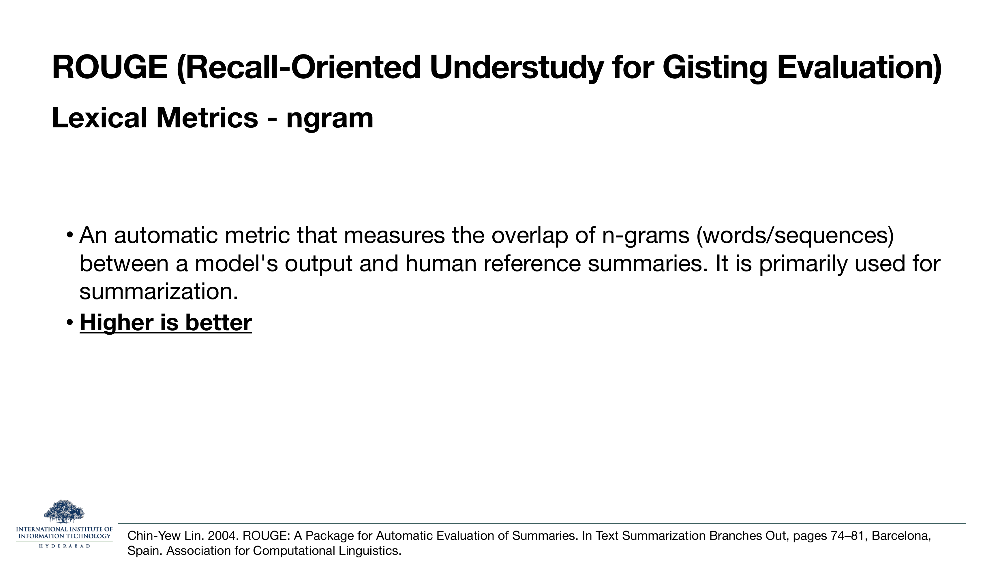
slide 50 · ROUGE
On the slide
ROUGE also counts n-gram overlap with a reference, but it is recall-oriented and built for
summarization. Higher is better. From Lin (2004).
Precision vs recall, and why summarization wants recall
BLEU divides matches by the number of n-grams in the output (precision). ROUGE-N divides by
the number in the reference (recall):
A summary's main job is to keep the important content, and the reference summary is a list of what
was important. Recall asks how much of it the output kept. Modern toolkits usually report precision,
recall and F1 for each ROUGE variant, and papers most often quote the F1.
Slide 51 / 83
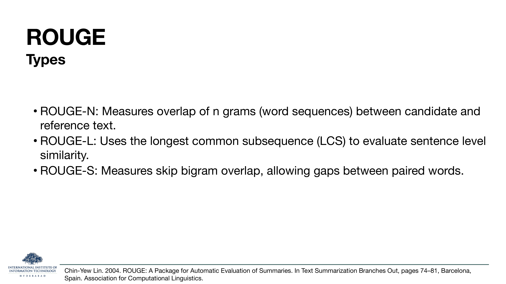
slide 51 · ROUGE-N, ROUGE-L, ROUGE-S
On the slide
Three variants: ROUGE-N (n-gram overlap), ROUGE-L (longest common subsequence) and ROUGE-S
(skip-bigrams: ordered word pairs with any gap between them).
Worked example
Reference (7 words): "police arrested the suspect near the station". Output (6 words): "the suspect
was arrested by police".
- ROUGE-1: shared unigrams are police, arrested, the, suspect (4). Recall =
4/7 ≈ 0.57, precision = 4/6 ≈ 0.67, F1 ≈ 0.62.
- ROUGE-2: the only shared bigram is "the suspect". Recall = 1/6 ≈ 0.17 (the
reference has 6 bigrams).
- ROUGE-L: the longest sequence of words appearing in the same order in both,
not necessarily adjacent. Here it has length 2 ("the suspect"). Recall = 2/7 ≈ 0.29.
The output means the same thing as the reference, in passive voice. ROUGE-1 gives it credit for the
right words. ROUGE-2 and ROUGE-L punish the reordering. That is the general pattern: higher-order
variants care more about word order.
Why LCS
A subsequence allows gaps, so ROUGE-L rewards outputs that keep the reference's order even with
extra words in between, without having to choose an n.
Slide 52 / 83
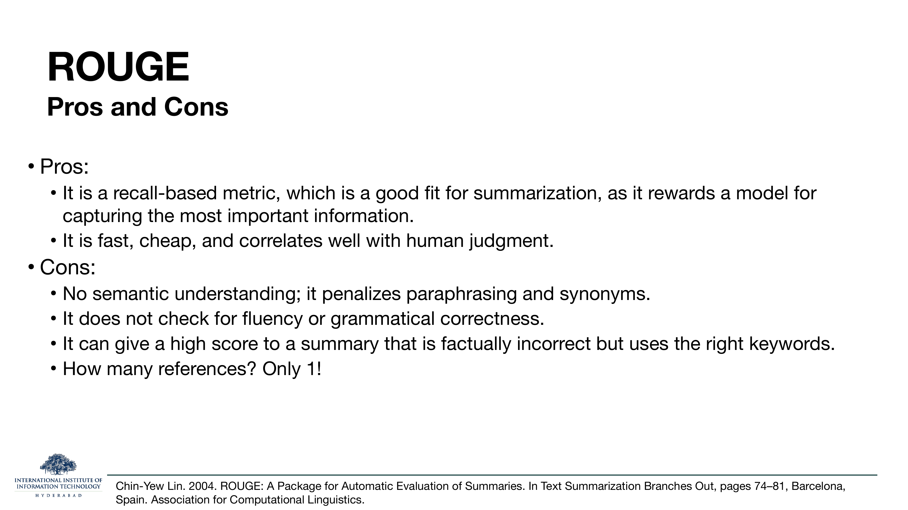
slide 52 · ROUGE pros and cons
On the slide
Pros: recall suits summarization; fast and cheap. Cons: no semantics, no fluency check, can reward
a factually wrong summary with the right keywords, and only one reference.
The factual-error problem
Reference: "The company's profits rose 10% in 2023." Output: "The company's profits fell 10% in
2023." Six of the reference's seven words match, so ROUGE-1 recall = 6/7 ≈ 0.86. The meaning is reversed. Swapping a number, a name or a negation keeps
almost every n-gram.
⚠ "Only 1!" is about datasets, not ROUGE
The original ROUGE package supports scoring against several references. The point is more likely
that most summarization datasets (for example CNN/DailyMail) provide just one reference summary
per document, so in practice ROUGE is computed against one.
Slide 53 / 83
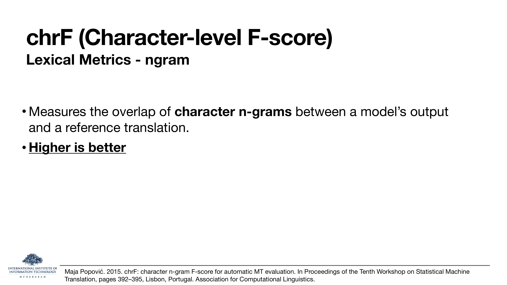
slide 53 · chrF
On the slide
chrF is the same overlap idea applied to character n-grams instead of word n-grams. Higher
is better. From Popović (2015).
The formula
Compute character n-gram precision chrP and recall chrR (averaged over n = 1 to 6
in the standard setting), then combine them with an F-score that weights recall more:
The common default is β = 2 (chrF2), which treats recall as twice as important as
precision.
Worked example (character bigrams only)
Reference word "playing", output word "play". As whole words, they do not match at all. As character
bigrams: the output has {pl, la, ay}; the reference has {pl, la, ay, yi, in, ng}. All 3 output
bigrams match, so P = 3/3 = 1 and R = 3/6 = 0.5.
chrF2 = 5 × 1 × 0.5 / (4 × 1 + 0.5) = 2.5 / 4.5 ≈ 0.56. The metric gives partial credit for getting
the stem right.
Slide 54 / 83
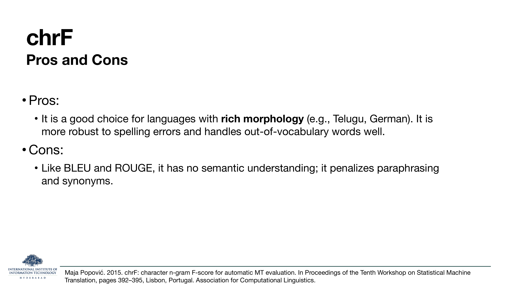
slide 54 · chrF pros and cons
On the slide
Pros: suits morphologically rich languages such as Telugu and German, and is robust to spelling
errors and unseen words. Con: still no semantics.
Why morphology matters
In Telugu or German, one root word takes many forms through suffixes and compounding. A translation
with the right root and the wrong suffix is nearly right, but word-level BLEU scores it as a complete
miss. Character n-grams see the shared root. Likewise a typo like "recieve" shares most of its
character n-grams with "receive". chrF is now a standard companion to BLEU in MT papers, and slide 80
recommends it for quick benchmarking.
Slide 55 / 83
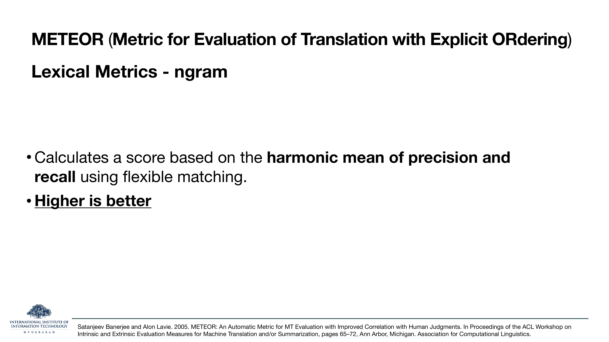
slide 55 · METEOR
On the slide
METEOR scores a translation by a harmonic mean of precision and recall, computed with flexible word
matching. Higher is better. From Banerjee and Lavie (2005).
How it works
- Align output words to reference words in stages: exact match first, then
matching stems ("running" ~ "ran" via a stemmer), then synonyms (via WordNet).
- From the aligned unigrams, compute precision P and recall R, and combine them
into a recall-weighted harmonic mean. In the original paper this is
Fmean = 10PR / (R + 9P).
- Penalise fragmentation: group the matched words into chunks (runs that
are adjacent and in the same order in both sentences). Fewer, longer chunks means better word
order. The penalty grows with chunks/matches, and the final score is
Fmean × (1 − penalty).
So the "explicit ordering" in the name is the chunk penalty: METEOR checks order without needing
higher-order n-grams.
Slide 56 / 83
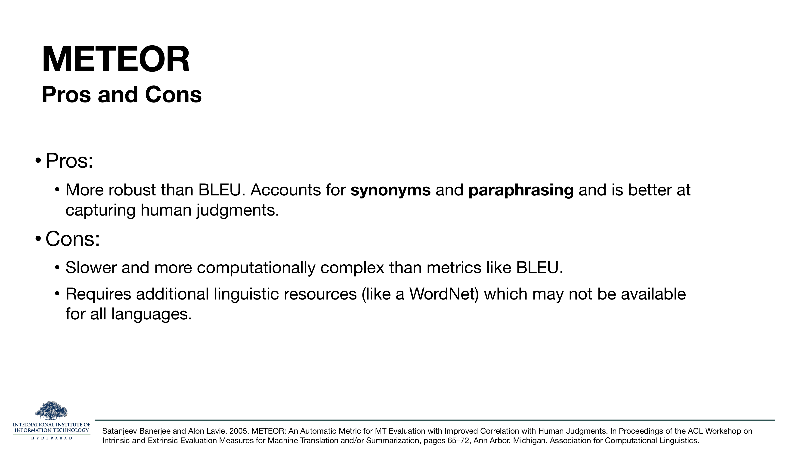
slide 56 · METEOR pros and cons
On the slide
Pros: handles synonyms and paraphrases, correlates better with humans than BLEU. Cons: slower, and
needs language resources like WordNet.
The resource problem
Stemmers and synonym lists exist for English and a handful of high-resource languages. For Telugu or
Odia, METEOR falls back to exact matching and loses its advantage. This is a recurring theme:
anything smarter than counting needs a resource, whether that is WordNet here or a pre-trained model
in §6.
⚠ Classification
The slide files METEOR under "Lexical Metrics - ngram", but METEOR matches unigrams only. It is
lexical, and its order sensitivity comes from the chunk penalty rather than from higher-order
n-grams.
Slide 57 / 83
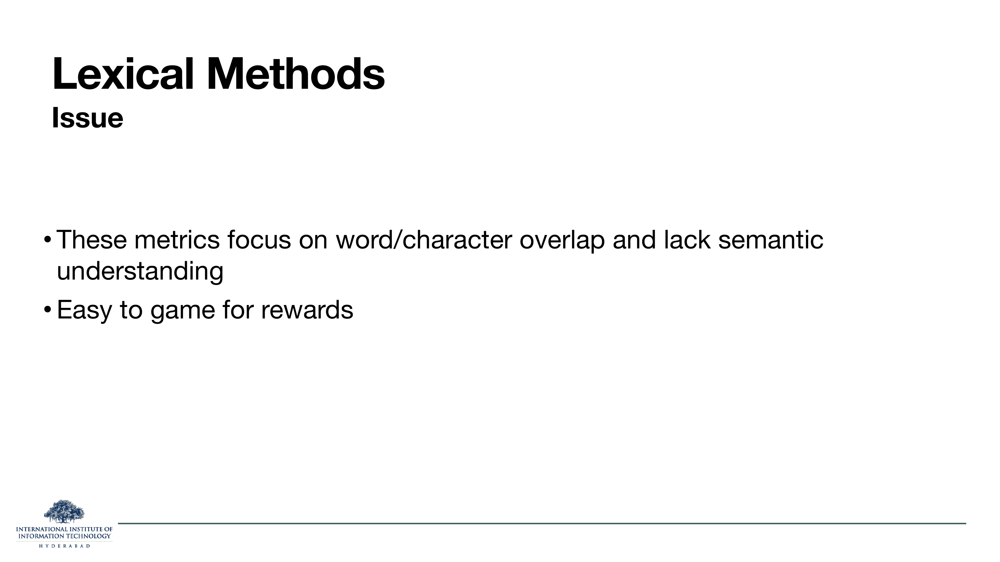
slide 57 · lexical metrics are blind and gameable
On the slide
Lexical metrics only see surface overlap, and they are easy to game when used as rewards.
Gaming in practice
If you train with reinforcement learning using ROUGE as the reward, the model learns whatever raises
ROUGE: repeating salient source words, padding summaries to recall more n-grams, copying sentences
verbatim. The score goes up and readability goes down. That is slide 8's curve with a concrete metric
on the y-axis.
Slide 58 / 83
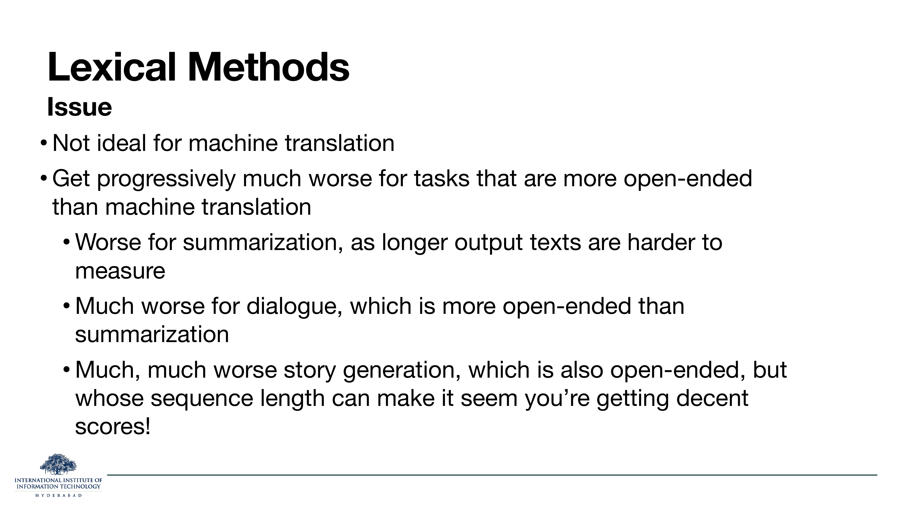
slide 58 · worse as tasks get more open
On the slide
Lexical metrics are not ideal even for MT, and get progressively worse for more open-ended tasks:
worse for summarization, much worse for dialogue, and much, much worse for story generation.
Why story generation looks deceptively good
The last bullet is subtle. Any two long English stories share many unigrams and common bigrams
("of the", "in a", "she said") just because English has frequent words. So two completely unrelated
stories can get a non-trivial ROUGE or BLEU. The number looks "decent" but measures nothing about
the story. The more open the task, the closer the metric's score is to the score of random fluent
text.
§6Embedding-based metrics
The fix for "no semantic understanding" is to compare meanings
instead of strings. Represent words or sentences as vectors from a
pre-trained model, and measure how close the output's vectors are
to the reference's. Slides 59–68 cover four such metrics and end
with a summary table.
Slide 59 / 83
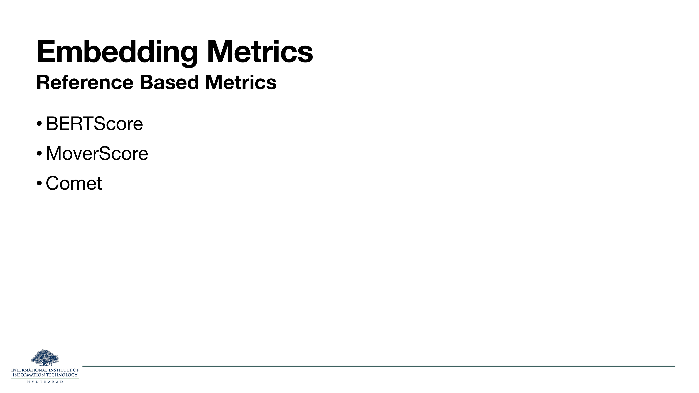
slide 59 · three embedding metrics
On the slide
Three embedding-based, reference-based metrics: BERTScore, MoverScore and COMET. (MEE4 follows on
slides 66–67.)
The common idea
All of them use a pre-trained encoder, so "car" and "automobile" end up close together in vector
space. They differ in how they compare the vectors: greedy token matching (BERTScore), optimal
transport (MoverScore), or a regression model trained on human scores (COMET).
Slide 60 / 83
slide 60 · BERTScore
On the slide
BERTScore embeds every token of the output (hypothesis) and the reference with a contextual model
like BERT, computes the cosine similarity of every pair, and matches tokens by similarity. Higher is
better. From Zhang et al. (2019).
The formula
With reference tokens xi and candidate tokens ŷj (embeddings
normalised, so a dot product is a cosine similarity), each token is matched to its most similar token
on the other side:
FBERT is the harmonic mean of the two. This is the soft version of n-gram
precision and recall: instead of "is this word in the reference? 0 or 1", it is "how similar is the
closest reference word? a number near 0 to 1".
Worked toy example
Reference "the car is fast", candidate "the automobile is quick". Suppose the cosine similarities of
the best matches are: the–the 1.0, car–automobile 0.85, is–is 1.0, fast–quick 0.80. Recall = (1.0 +
0.85 + 1.0 + 0.80) / 4 ≈ 0.91. Exact-match unigram recall would be 2/4 = 0.5. (The numbers are
illustrative; real cosine values from BERT tend to sit in a narrow high range, which is why the
authors offer an optional rescaling against a baseline.)
Under the hood
"Contextual" matters. The vector for "bank" in "river bank" differs from "bank" in "bank
account", so BERTScore does not reward a match on the same word used in a different sense. The
paper also offers IDF weighting, so that rare, content-bearing words count more than "the".
Slide 61 / 83
slide 61 · BERTScore pros and cons
On the slide
Pros: handles paraphrases and synonyms; correlates better with humans than BLEU and ROUGE. Cons:
slower, and needs a large pre-trained model.
What it still misses
"profits rose" and "profits fell" have very similar contextual embeddings: both are about profits
changing. So BERTScore, like ROUGE, can give a high score to a factually reversed output. Semantic
similarity is not the same as semantic equivalence. Slide 68 calls BERTScore
"better with paraphrases; still imperfect", which is fair.
Slide 62 / 83
slide 62 · MoverScore
On the slide
MoverScore measures the cost of turning one text into another in embedding space, based on Word
Mover's Distance. N-grams are represented as IDF-weighted sums of their word embeddings, and the
distance between n-grams is Euclidean.
The "earth mover" picture
Imagine each output word as a pile of dirt sitting at its embedding's position, and each reference
word as a hole. Each pile's size is its IDF weight, so rare words carry more dirt. The Word Mover's
Distance is the minimum total work (amount × distance moved) to fill the holes with the dirt. If the
output's words sit right on top of the reference's words, the work is near zero. MoverScore turns
that distance into a similarity score.
Unlike BERTScore, which matches each token independently to its single best partner, this solves one
global problem, and a word's weight can be split across several words on the other side.
Slide 63 / 83
slide 63 · MoverScore pros and cons
On the slide
Pro: many-to-many mapping, where BERTScore only matches word to word. Con: very expensive and
slow.
Many-to-many, by example
Reference "passed away", output "died". BERTScore's recall matches "passed" to "died" and "away" to
"died" separately, each with an imperfect score. MoverScore can move the weight of both reference
words onto the single output word, which fits how the meaning is actually split. The cost is solving
an optimal transport problem per sentence pair, which is much slower than taking a max over a
similarity matrix. ("BertScorer" on the slide refers to BERTScore.)
Slide 64 / 83
slide 64 · COMET
On the slide
COMET is trained to predict human judgements of translation quality. It reads the source, the
translation and (in its reference-based form) a human reference. From Rei et al. (2020).
What is different about COMET
BLEU, chrF, BERTScore and MoverScore are hand-designed formulas. COMET is a learned
metric: a multilingual encoder (XLM-R in the original) embeds the source, translation and reference,
and a small regression network on top is trained to output the score that human annotators (DA or
MQM, §4) gave. So it is directly optimised for slide 27's "correlate with humans" requirement.
Including the source is important. A reference-only metric cannot tell a valid alternative
translation from a wrong one if both differ from the reference. With the source, COMET can check
meaning against the original.
⚠ Classification
COMET sits under "Embedding Based Metrics" here because it uses embeddings, but it is better
thought of as a trained (learned) metric: its score comes from a network fitted to human labels,
not from a fixed similarity formula. That is also why its pros and cons on the next slide differ
from BERTScore's.
Slide 65 / 83
slide 65 · COMET pros and cons
On the slide
Pro: highest correlation with human judgement for MT, among the metrics on this slide set. Cons:
slow, and only as good as its training data.
The training-data limit
COMET learns what WMT annotators rewarded, on WMT-style news text in WMT language pairs. On a new
domain (legal, medical) or a language pair it saw little of, its scores are less trustworthy, and it
can inherit annotator biases. A learned metric can also be gamed like any model: an MT system tuned
directly against COMET can find outputs COMET scores highly that humans do not. Goodhart again.
Slide 66 / 83
![MEE4, Embedding Based Metrics. Evaluates translations by combining three aspects: Syntactic similarity (fluency, using modified BLEU): evaluating a hypothesis, the order of n-gram is based on the corresponding reference sentence length. Lexical, morphological and semantic similarity (surface forms, roots, meanings) from MEE. Contextual similarity (sentence-level meaning via embedding distance) using LaBSE. Citation: Mukherjee and Shrivastava, 2023, MEE4 and XLsim: IIIT HYD's submissions for WMT23 metrics shared task.](../assets/slides/L12-evaluation/slide-66.png)
slide 66 · MEE4
On the slide
MEE4, a metric from IIIT Hyderabad (Mukherjee and Shrivastava, WMT23), combines three signals:
- Syntactic similarity, using a modified BLEU in which the maximum n-gram order
depends on the reference sentence length, rather than always being 4.
- Lexical, morphological and semantic similarity from the earlier MEE metric:
matching surface forms, roots and meanings.
- Contextual similarity of whole sentences, from the distance between LaBSE
sentence embeddings. LaBSE is a multilingual sentence encoder.
Why vary the n-gram order
On a 3-word sentence there is no 4-gram that can match, so standard BLEU's p4
is undefined or zero and the score collapses (as on slide 48). Choosing the maximum order from the
reference length avoids that collapse on short sentences.
Slide 67 / 83
slide 67 · MEE4 pros and cons
On the slide
Pros: covers surface, morphological and semantic levels at once, and handles paraphrases. Cons:
depends on embedding quality and is computationally heavy.
Where it fits
MEE4 is an attempt to meet slide 27's first requirement directly: measure similarity at several
linguistic levels by combining one component per level, instead of trusting one model to capture
everything. It needs no training on human scores, unlike COMET.
Slide 68 / 83
![Metrics Summary table with columns Metric, Task, Formula (intuition), Key Limitation. Perplexity: language modeling; 2 to the power of minus 1/N sum of log2 p(w_i); rewards fluency, ignores factuality. BLEU: translation, summarization; n-gram precision vs reference; ignores semantics, penalizes valid paraphrases. ROUGE-L: summarization; longest common subsequence; rewards surface overlap, misses abstraction. BERTScore: open-ended generation; embedding similarity; better with paraphrases, still imperfect. Human Judgment: any; Likert scales, pairwise comparison; expensive, slow, annotator disagreement.](../assets/slides/L12-evaluation/slide-68.png)
slide 68 · summary table
On the slide
A summary of five metrics: what task each is for, its formula in one line, and its main weakness.
The one new entry is perplexity.
Perplexity
The exponent is the average number of bits per token, which is the cross-entropy loss from slide 5
measured in base 2. Exponentiating turns it into an "effective number of choices": a perplexity of
10 means the model is, on average, as uncertain as if it were picking uniformly among 10 tokens.
Worked example. A model assigns probabilities 1/2, 1/4 and 1/8 to the three
tokens of a test sentence. log2 values: −1, −2, −3. Average: −2. PPL = 22 = 4.
(Using natural logs and e instead of 2 gives the same answer.)
⚠ Notation and scope
(1) The table writes p(wi). For a language model this must be the
conditional probability p(wi | w<i) given the preceding
tokens; with unconditional probabilities you would be measuring a unigram model. (2) Perplexity
scores a model on fixed text; it does not score generated outputs, so it is not a generation metric
like the others in the table. It also depends on the tokenizer, so perplexities of models with
different vocabularies are not directly comparable.
§7Reference-free metrics
If references are expensive and only capture one of many good
answers, drop them. Reference-free metrics score an output using
only the input (or a population of human text). Slides 69–79 cover
five: two for summarization, two for translation quality
estimation, and one that compares whole distributions.
Slide 69 / 83
slide 69 · five reference-free metrics
On the slide
The list: SUPERT, ROUGE-C, COMET-Kiwi, xCOMET-XL and MAUVE.
What replaces the reference
- SUPERT, ROUGE-C: the source document itself (or a pseudo-reference built from
it).
- COMET-Kiwi, xCOMET: a model trained to judge quality from the source and output
alone. In MT this is called quality estimation (QE).
- MAUVE: a large sample of human-written text, compared as a distribution.
Slide 70 / 83
slide 70 · SUPERT
On the slide
SUPERT builds a pseudo-reference by picking the salient sentences from the source documents,
then measures semantic overlap between the summary and that pseudo-reference using contextual
embeddings with soft token alignment. From Gao, Zhao and Eger (2020).
In other words
It replaces "human-written reference" with "automatically extracted key sentences", and replaces
n-gram overlap with a BERTScore/MoverScore-style soft matching. It was designed for multi-document
summarization, where writing references is especially costly. How the salient sentences are chosen
is a design choice; a simple option is to take the leading sentences of each document.
Slide 71 / 83
slide 71 · SUPERT pros and cons
On the slide
Pros: semantic matching, flexibility. Cons: cost of the soft alignment, and limited language support
(it needs a good contextual encoder for the language).
The built-in weakness
The pseudo-reference is only as good as the salience heuristic. If the important fact is in the
middle of a document and the heuristic picks the opening sentences, a summary that correctly includes
that fact gets no credit for it.
Slide 72 / 83
slide 72 · ROUGE-C
On the slide
ROUGE-C: compute ROUGE against the source document instead of a reference summary, because
the source contains all the information. From He et al. (2008).
The simplest possible reference-free metric
No model, no human reference. The logic: a good summary should contain content from the source, so
overlap with the source is evidence of good content selection.
Slide 73 / 83
slide 73 · ROUGE-C pros and cons
On the slide
Pro: no reference needed. Cons: it treats extractive and abstractive summarizers differently, and it
depends on the length of the input.
Unpacking both cons
- Extractive vs abstractive. An extractive summarizer copies sentences from the
source, so every n-gram it outputs is in the "reference": high precision for free. An abstractive
summarizer rewrites in its own words and is penalised for exactly what makes it good.
- Length. The "reference" is now the whole input, which can be thousands of words.
ROUGE recall against it is tiny for any short summary and grows with summary length, so the
score mostly reflects how long the summary is relative to the input, not how well it chose
content.
Slide 74 / 83
slide 74 · COMET-Kiwi
On the slide
COMET-Kiwi is trained to predict human ratings of accuracy and fluency from the source and the
translation only, with no reference. From Rei et al. (WMT 2022).
Same family as COMET
Take COMET (slide 64) and remove the reference from its input. The model now has to judge "is this a
good translation of this source?" by itself, which is a harder problem, but one that a strong
multilingual encoder trained on enough human scores can learn. The practical use: score translations
at deployment time, where no reference exists, for example to flag low-quality outputs for a human
to check.
Slide 75 / 83
slide 75 · COMET-Kiwi pros and cons
On the slide
Pro: works with no reference. Cons: domain-dependent like any learned model, and gives one number
with no explanation of what is wrong.
The second con sets up the next slide
A score of 0.62 tells you the translation is mediocre, not whether the problem is a wrong term, a
missing clause or bad grammar. xCOMET is the answer to that.
Slide 76 / 83
slide 76 · xCOMET-XL
On the slide
xCOMET-XL extends COMET to say not only how good a translation is but where the errors are and
what kind they are. From Guerreiro et al. (TACL 2024).
How it does that
Besides the sentence score, xCOMET tags error spans in the translation and assigns each a
severity, in the style of MQM (§4). In effect it is an automatic MQM annotator. "XL" is the model
size (there is also an XXL variant).
⚠ Not strictly reference-free
xCOMET can be run with or without a reference. With a reference it is a reference-based metric;
without one it works in quality-estimation mode. Slide 80's decision tree reflects this: it lists
XCOMET under "reference available" and XCOMET-QE under "no reference".
Slide 77 / 83
slide 77 · xCOMET-XL pros and cons
On the slide
Pros: names the type of each error and is more human-like. Cons: domain-dependent and expensive
(it is a multi-billion-parameter model).
The trade so far
Going from BLEU to COMET to xCOMET, each metric correlates better with humans and explains more, and
each costs more to run and depends more on its training data. There is no free lunch along this
line.
Slide 78 / 83
![MAUVE, Reference Free Metrics. It compares the distribution of model-generated text with the distribution of human-written text. Texts are represented in an embedding space, and the two distributions are compared there. High = generated text is more similar to human text in terms of overall quality and diversity. Unlike BLEU or ROUGE, MAUVE evaluates sets of outputs at the distribution level, rather than comparing one generated sentence directly with one reference. Citation: Pillutla et al., NeurIPS 2021.](../assets/slides/L12-evaluation/slide-78.png)
slide 78 · MAUVE
On the slide
MAUVE compares the distribution of model-generated texts with the distribution of
human-written texts, in an embedding space. High means the generated texts look like human text in
both quality and diversity. It scores a set of outputs, not one output. From Pillutla et al.
(NeurIPS 2021).
How it works, roughly
- Generate many texts from the model, and collect many human texts for the same kind of
prompts.
- Embed every text with a large language model.
- Cluster all the embeddings together (e.g. with k-means), and turn each set into a histogram over
clusters. Now you have two discrete distributions, P (human) and Q (model).
- Measure how far apart they are using KL divergences between each of them and mixtures of the two,
and summarise the resulting curve as a number between 0 and 1.
Why distributions
There are two ways to fail. A model that generates the same safe, fluent paragraph every time scores
well on per-sample quality but covers a tiny part of the human distribution (a recall-like failure).
A model that generates wildly diverse nonsense covers a lot but puts mass where no human text is (a
precision-like failure). Comparing distributions catches both. This connects to decoding (Lecture
10): greedy decoding tends toward the first failure, high-temperature sampling toward the second.
Slide 79 / 83
slide 79 · MAUVE pros and cons
On the slide
Pros: catches repetition and low diversity, correlates well with humans. Cons: needs many samples,
expensive.
The sample-size con, linked to §2
Estimating a distribution needs far more data than estimating a mean. With too few texts, the
cluster histograms are noisy and MAUVE varies from run to run. MAUVE is also a system-level number:
it cannot tell you which individual output was bad.
§8Choosing a metric, and why evaluation is still hard
The last four slides give a decision tree for picking an MT metric
and then explain why no metric solves the problem.
Slide 80 / 83
![Chose a metric: a decision-tree flowchart. Root: Assessment Type? Score with Explanations leads to Fine-grained Assessment? Yes: GEMBA-MQM, Auto-MQM, INSTRUCTSCORE; No: GEMBA-DA, LTRC LLM metric. Score leads to Reference available? No leads to Paraphrases or semantic roles? No: REUSE, CometKiwi, XCOMET-QE; Yes: YiSi-2, Prism-src. Yes leads to Quick Benchmarking? Yes leads to Post-Editing Effort? Yes: TER; No: BLEU, NIST, spBLEU, YiSi-0, ChrF, ChrF++. Quick Benchmarking No leads to Source-aware Semantics? No leads to Complex Creative Translations? Yes: BARTScore, Prism; No leads to Domain Text? Yes: STD, METEOR, MEE, MEE2, MEE4, ChrF-S; No: BERTScore, XLsim, BLEURT, embed_llama. Source-aware Semantics Yes leads to Knowledge Graph Integration? Yes: KG-BERTScore; No leads to Semantic Roles? Yes: YiSi-1, MEANT; No: COMET, XCOMET, UniTE. Courtesy: Ananya Mukherjee. Citation: Mukherjee and Shrivastava, 2025, Lost in Translation? Found in Evaluation: A Comprehensive Survey on Sentence-Level Translation Evaluation, ACM Computing Surveys 58(1).](../assets/slides/L12-evaluation/slide-80.png)
slide 80 · a decision tree for MT metrics
On the slide
A flowchart from Mukherjee and Shrivastava's 2025 survey of sentence-level MT evaluation. Answer a
series of questions and land on a family of metrics.
The main branches
- Do you want explanations, not just a score? Use LLM-based metrics: GEMBA-MQM,
Auto-MQM or INSTRUCTSCORE for fine-grained error lists, GEMBA-DA for a direct-assessment style
score. (These are the "LLM-based metrics" from slide 31.)
- No reference? Quality-estimation metrics: CometKiwi, XCOMET-QE, REUSE; or YiSi-2
/ Prism-src if you care about semantic roles and paraphrase.
- Reference available and you want quick benchmarking? TER if you care about
post-editing effort, otherwise BLEU / chrF / chrF++ and relatives.
- Reference available and you want depth? If the metric should use the source,
COMET / XCOMET / UniTE (or YiSi-1 / MEANT for semantic roles, KG-BERTScore for knowledge graphs).
If not, BERTScore / BLEURT for general text, METEOR / MEE4 for domain text, BARTScore / Prism for
creative translation.
The lesson of the tree
There is no single best metric. The right one depends on what you have (a reference or not), what
you need (a quick number, a post-editing estimate, an explanation) and what kind of text you are
evaluating. The green-highlighted names appear to be the authors' recommended picks within each
leaf.
⚠ Typo
The title reads "Chose a metric"; it means "Choose".
Slide 81 / 83
slide 81 · have we solved evaluation? No.
On the slide
Have we solved evaluation? No.
Why not, in one line
Every metric in the lecture is a proxy (slide 7), and each one has a known way to be fooled:
n-gram metrics by paraphrase and by swapped facts, embedding metrics by swapped facts, learned
metrics by domain shift and by optimisation pressure.
Slide 82 / 83
slide 82 · understanding is hard to automate
On the slide
Judging meaning and facts needs understanding, not surface matching, and that is fundamentally hard
to automate.
The circularity
To check whether a summary is factually faithful, the evaluator has to read the source, understand
it, and compare claims. That is at least as hard as the summarization task itself. So a fully
reliable automatic evaluator would need to be a model at least as capable as the one being evaluated,
and it could still share that model's blind spots. This is the underlying reason LLM-as-judge methods
work as well as they do, and also why they should not be trusted blindly.
Slide 83 / 83
slide 83 · single metrics are gameable; use suites
On the slide
Three closing points. Single metrics can be gamed (BLEU rewards factually wrong answers). Combining
metrics helps, but you need a principled way to choose which ones, for which tasks, with what
weights. Benchmark suites provide standardised, multi-metric, multi-task evaluation.
Why combining is not trivial
Suppose you average BLEU (0–100), COMET (roughly 0–1) and a human score (1–5). The result is
dominated by whichever has the largest scale. Even after normalising, the weights encode a judgement
about what matters. Benchmark suites (GLUE and SuperGLUE for understanding tasks, and larger suites
such as HELM or BIG-bench for LLMs) fix those choices once so that results are at least comparable
across papers. They inherit every limitation of their component metrics, and a fixed public suite is
itself a target that models can be over-tuned to.
✦ Key takeaway
Report more than one metric, choose them for the task, report confidence intervals (§2), and look
at actual outputs. When a metric moves a lot and the outputs do not look better, trust the outputs.
Zoom out. The lecture moves from a principle to a catalogue. The
principle: a score is a noisy estimate of a proxy for what you care
about, so you need enough test examples to beat the noise (§2) and
a proxy close enough to the real goal that optimising it does not
backfire (§1). The catalogue is a sequence of better proxies.
Humans are the gold standard but slow (§4). Edit rates and n-gram
overlap are cheap and blind to meaning (§5). Embedding metrics see
paraphrase but not factual reversal (§6). Learned and
reference-free metrics match humans best but inherit their training
data's limits (§7). For an exam, be able to compute WER, TER, BLEU,
ROUGE-N/L, chrF and perplexity on a short example, state what each
metric divides by, and name one way each can be fooled.